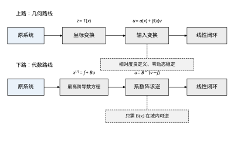
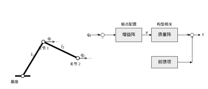
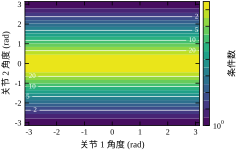
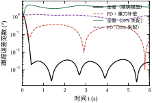
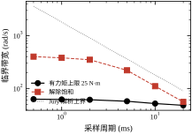
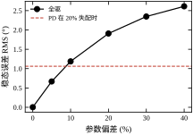
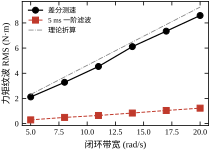
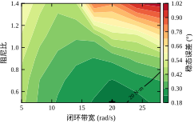
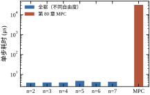
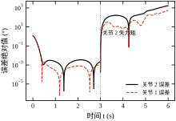

第 80 章把学习塞进 MPC，换来了更准的预测，但代价一点没少：每个控制周期仍然要解一次优化问题，仍然要滚动时域，仍然只能在“约束 + 代价”的框架里做取舍。那条路线的哲学是用计算换性能。本章讲另一条路线，哲学正好相反：用结构换计算。
具体地说，如果系统能被写成某个“最高阶导数等于已知函数加控制输入”的形式，并且那个乘在输入上的矩阵在工作域内处处可逆，那么我们就可以直接解出控制量，把闭环指定成任意想要的线性系统。整个过程没有迭代、没有预测时域、没有可行域，一次矩阵求逆就结束。这类系统叫全驱系统（fully actuated system），这套设计方法叫全驱系统方法。
上一章的结论可以直接拿来当引子：“学模型残差的样本效率最高，代价是它的上限被 MPC 的结构限制住了。”全驱系统做的正是把这层结构拆掉——如果模型足够准，为什么要用 15 步预测和 60 个约束去逼近一个本来可以闭式写出的答案？
本章的算例是一台平面二连杆机械臂，两个关节都由力矩电机直接驱动，参数见表 81-1。参考轨迹是两个关节各自的正弦，幅值 0.7 rad 与 0.6 rad，频率 1.0 rad/s 与 1.3 rad/s，仿真 6 s，控制周期 1 ms。
表 81-1 平面二连杆机械臂的仿真参数
| 参数 | 符号 | 取值 |
|---|---|---|
| 连杆质量 | m_1,m_2 | 1.0 kg |
| 连杆长度 | l_1,l_2 | 0.5 m |
| 质心转动惯量 | I_1,I_2 | 0.01 kg·m² |
| 单关节力矩上限 | \tau_{max} | 25 N·m |
| 控制周期 | T_s | 1 ms |
| 期望带宽 / 阻尼比 | \omega_n,\zeta | 15 rad/s, 0.9 |
用全驱方法设计，稳态跟踪误差的均方根是 0.0024°；用最朴素的“PD + 重力补偿”，同样增益下是 0.244°，相差约 100 倍。前者的单步计算耗时是 4.8 μs（Python，含矩阵求逆与前馈），第 80 章的 MPC 是 31.23 ms，相差约 6500 倍。
这两个数字很容易让人得出“全驱全面优于 MPC”的结论，但那不是本章要说的。把条件改一改，结论立刻翻转：模型参数整体偏 20% 时，全驱的误差涨到 3.71°，而 PD + 重力只有 1.06°——全驱反而输了三倍半。原因不复杂：全驱把模型当成精确的逆来用，模型错多少，闭环就错多少；PD 根本不用模型的质量阵，所以模型错了它也不在乎。
所以本章真正要回答的问题不是“全驱好不好”，而是：在什么条件下，把模型信到可以求逆的程度是划算的；以及一旦决定这么做，工程上要付出哪些代价。 这两个问题贯穿全章。
“全驱”这个词容易误解成“执行器足够多”。它的准确含义要弱一些，也更工程化：每一个自由度的高阶导数，都能被输入独立地、即时地改变。
要看清这句话与反馈线性化的差别，最好把两条设计路线并排放在一起（图 81-1）：上面那条走几何，先找坐标变换把系统“拉直”，在新坐标里做线性设计；下面那条走代数，承认最高阶导数已经与输入成线性关系、只是系数随状态变，把系数求逆就结束。

对二连杆机械臂，这句话就是
M(q)\ddot q+C(q,\dot q)\dot q+G(q)=\tau \tag{81-1}
其中 M(q) 对称正定。正定意味着 M^{-1} 存在，于是
\ddot q=M^{-1}(q)\big[\tau-C(q,\dot q)\dot q-G(q)\big] \tag{81-2}
右端对 \tau 是仿射的，且系数矩阵可逆。这就是全驱：加速度这一层，两个关节各自有一路独立的、不会互相堵死的控制权限。 图 81-2 左边是这台机械臂的几何，右边是 (81-2) 对应的控制结构：两路误差各乘一组增益得到“想要”的加速度，经质量阵“换挡”成力矩，再叠上科氏与重力前馈。

反过来看什么不是全驱。单摆的小车摆系统，控制量是小车加速度，摆杆角度要到二阶导数才出现输入，而中间还夹着一个不稳定零点；欠驱动机械臂（比如只有肩关节有电机、肘关节自由摆动）在肘关节方向上根本没有权限。这些系统的输入矩阵在某个方向上退化，B 不可逆，“解出 u”这一步就做不了。
这里有一个容易被忽略的层次：全驱性是相对于“哪一阶导数”说的。同一个系统，对位置不是全驱，对速度可能是；对关节角不是全驱，对末端位置更不是。设计前必须先说清楚“对谁全驱”，这决定了控制器能指定哪一层的闭环动态。
B 可逆是一个二值判断，工程上不够用。真正要问的是“可逆到什么程度”。用奇异值衡量：
\mu(x)=\frac{\sigma_{\min}\big(B(x)\big)}{\sigma_{\max}\big(B(x)\big)}=\frac{1}{\kappa\big(B(x)\big)} \tag{81-3}
\mu 在 (0,1] 之间，越接近 1 说明各个方向的“控制权限”越均衡；越接近 0 说明某个方向几乎推不动，逆矩阵会把噪声和模型误差放大成很大的力矩。本章把它叫全驱裕度。
对本章的机械臂，B=M^{-1}，所以 \mu=1/\kappa(M)。在工作域 q_1,q_2\in[-\pi,\pi] 上扫 121×121 个构型，条件数的范围是 1.09 到 31.36，中位数 5.83。最坏构型出现在手臂完全伸直时：此时末端径向的等效惯量只有 0.047 kg·m²，而最大方向是 1.48 kg·m²，相差 31 倍。图 81-3 是这张地图，对数色标，白线是 2、5、10、20 四条等值线。

地图的形状比数字更有信息量。最坏区域集中在手臂伸直的附近（q_2\approx0 一带），最好区域在 q_2\approx\pm\pi（完全折叠），两者相差近 30 倍。这不是一个“平均意义上还好”的分布，而是一个双峰分布：一半构型在 6 以下，另一半迅速恶化。选固定增益时，你只能在两群之间取一个折中值，这决定了它在任一群里都不合适。
这个数字后面会反复用到。它同时是“固定增益为什么调不好”的原因（同一组标量增益在不同构型下的闭环带宽相差 \sqrt{31.36}=5.60 倍），也是“全驱为什么需要模型”的原因（只有知道当前构型，才能把这 31 倍的差异补回来）。
全驱系统方法把控制器设计退化成两件事：验证一个矩阵在工作域内可逆，以及给一个线性系统配极点。 剩下的全部工作量，都在保证这两件事的前提成立——模型够准、微分拿得到、输入不饱和。
这句话里，“退化”是褒义：它意味着设计过程可以被检查、被复现、被写进检查表。相比之下，MPC 的调参更像在约束与代价之间找一个说不清的最优点，反馈线性化则要先找一个满足条件的坐标变换。全驱把这部分不确定性压到了最低。
但“退化”也意味着放弃了三样东西：约束处理、预测能力、对模型误差的鲁棒性。这三样恰好是 MPC 的长处。所以两条路线不是替代关系，而是分工关系：约束硬、模型糙、要前瞻，用 MPC；约束软、模型准、要快，用全驱。
把全驱放到全书的方法谱系里，它和另外两条路线的关系可以用表 81-2 概括。
表 81-2 四条设计路线的横向对照
| 路线 | 需要的模型 | 设计动作 | 在线计算 | 约束处理 |
|---|---|---|---|---|
| PID（第 44 章） | 几乎不需要 | 调三个增益 | 代数运算 | 无，靠限幅 |
| 反馈线性化（第 60 章） | 精确非线性模型 | 找坐标变换与逆 | 代数运算 | 无 |
| 全驱系统（本章） | 最高阶导数方程 | 求逆 + 配极点 | 一次矩阵求逆 | 无，靠限幅 |
| MPC（第 58、80 章） | 预测模型 | 设计代价与约束 | 在线优化 | 显式 |
表 81-2 里最值得看的一行是“设计动作”。PID 调增益，是在一个固定的结构里找参数；反馈线性化找坐标变换，是在一个很大的函数空间里找；全驱只做矩阵求逆和多项式配置；MPC 则把设计负担推到了在线优化。设计动作越轻，在线计算越轻，但对模型的信任要求越高。
还有一条隐藏的差别：反馈线性化要求相对度良定义、零动态稳定，这两个条件在很多系统上不成立或难以验证；全驱只要求最高阶导数方程的系数阵可逆。从这个意义上说，全驱是“反馈线性化的一个特例的推广”——它放弃了通过坐标变换把系统变成线性系统，只要求系统在最高阶导数这一层已经是仿射的。§81.2.6 会把这件事说清楚。
工程师读法：§81.3（五步流程）、§81.5（离散实现的边界）、§81.8（调参）、§81.10（落地与验证）。若只读一节，读 §81.3。
研究者读法：§81.2（定义与稳定性证明）、§81.4（与反馈线性化、微分平坦的关系）、§81.6（误差分解）、§81.9（改进方向）。
学生读法：按顺序读，§81.12 的代码可以最后看。§81.1 到 §81.5 建立主线，§81.6 到 §81.8 是工程配套，§81.11 收边界。
三种读法共享同一个判断：先问“我的系统对谁全驱”，再问“我的模型有没有准到可以求逆”。 这两个问题的答案，比任何公式都更能决定这套方法适不适合你。
二连杆不是一个随便挑的例子，它是能做全驱演示的最小多变量非线性系统。四个条件它同时满足：自由度大于 1（才有耦合，才能谈矩阵求逆）、质量阵随构型变（才有条件数这条支线）、有重力与科氏项（才有“前馈消掉什么”的可讲之处）、模型有解析式（才能手算校验）。
换成单摆，第一和第二条都不成立：单摆只有一个自由度，M 是标量，“矩阵可逆”退化成一个正数非零，条件数恒等于 1，整章的分析无处落脚。更麻烦的是，小车摆系统对摆角并不全驱，无法演示本章的主线。
换成线性系统，第二条也不成立。线性时不变系统的 M 是常数，\kappa 与构型无关，全驱退化成“状态反馈 + 前馈”——那是第 20 章就讲过的东西，看不出新意。
换成六轴工业臂，四条都满足，但算例失去了可复现性：运动学参数、减速比、负载惯量都要具体取值，读者无法用一台“标准六轴”复现数字。二连杆的好处是所有参数都能写在一张表里（表 81-1），任何人都能重跑出同样的 0.0024°。
代价是代表性有限。二连杆没有柔性关节、没有摩擦、没有减速器回差、没有电机电流环动态，这四样在真实机械臂上都会显著改变结论。本章的处理方式是把它们显式排除，并在 §81.3.6 说明排除的后果——不是假装它们不存在，而是把它们划到“这套方法管不到的部分”，留给别的章节或别的层。
读者若要把结论搬到六轴臂上，需要额外确认两件事：一是 \kappa 的上界会更大（串联关节越多，末端方向的惯量差异越大，条件数通常比 31 更差），二是摩擦与回差会引入一个“参数辨识无法消除”的误差底，这个底会直接抬高图 81-8 的曲线。两件事都指向同一个方向：真实系统的全驱表现会比本章的算例差，差多少取决于这两项的大小。
在展开公式之前，先把三句最常听到的话拆开看。它们都不是完全错，但每一句都藏着一个会导致误判的省略。
误解一：“全驱就是能控。” 这两件事不在同一个层面上。能控性问的是“能不能把状态从任意初值送到任意终值”，是一个存在性问题；全驱问的是“输入能不能直接作用在最高阶导数上”，是一个结构问题。一个系统可以能控却不全驱：小车摆在平衡点线性化后是能控的，但摆角通道上没有任何直接输入，B 的第二行是零，\mathrm{rank}\,B<n。反过来，全驱的系统一定可控（因为可以直接指定最高阶导数），所以全驱是能控的一个充分但不必要的加强条件。工程含义是：看到“系统可控”就以为可以套全驱，是最容易犯的第一步错。
误解二：“模型不准，全驱就完全不能用。” 这句话夸张了。§81.6 会给出一个一致最终有界的结论：误差被模型失配的范数除上 \omega_n^2 所界定。失配 5% 时实测 0.668°，仍低于 PD 在 20% 失配下的 1.061°（这是本章取的保守基准）；失配 10% 时 1.187° 越过去，20% 时已经是 3.714° 对 1.061°。所以正确的说法是：全驱有一个大约 9% 的失配门槛，门槛以内仍有优势，门槛以外不如 PD。 这条门槛不是“能不能用”的开关，而是一条连续的、可以事先估算的分界线。
误解三：“全驱要多算一次矩阵求逆，所以比分块 PD 慢。” 求逆确实要算，但代价被高估了。本章二连杆的完整控制器（含质量阵、科氏项、重力项、求逆、两次矩阵乘）单步 4.8 μs，而这个时间相对于 1 ms 的控制周期只占 0.48%。真正贵的是“带约束的在线优化”，本章引用的 MPC 单步是 31.23 ms，相差 6472 倍。全驱在计算量上的位置很特殊：它比 PD 贵，但贵的那部分在今天的处理器上几乎看不见；它比 MPC 便宜三个数量级。 这一点在 §81.9.2 还有数据。
三句话合起来是一句：全驱不是“更强的控制”，而是“在模型够准、机构够硬的前提下，用结构换性能”的一种特定交易。 交易的条款写在 B 的可逆性与 \kappa 的大小上，违约的代价写在失配门槛上。
§81.1 给的是画面，这一节把它写成可以逐行验算的形式。只想知道怎么用的读者可以跳到 §81.3；但 §81.5 与 §81.6 里的每一条工程限制，都是从这一节的几个式子里长出来的。
把“最高阶导数能被输入直接改变”写成方程：
x^{(r)}=f\big(x,\dot x,\dots,x^{(r-1)}\big)+B\big(x,\dot x,\dots,x^{(r-1)}\big)u \tag{81-4}
x\in\mathbb R^n 是位置一类的被控量，u\in\mathbb R^m 是输入，x^{(i)} 表示对时间求 i 阶导数，f 收集所有不含输入的项，B 是输入矩阵。全驱的定义只用一条：
\mathrm{rank}\,B=n \tag{81-5}
也就是 m\ge n 且 B 列满秩。本章的算例 m=n=2，条件退化成“系数阵可逆”；而 B=M^{-1} 与 §81.2.2 里取的 B=I，都靠质量阵对称正定保证可逆。
这里有三处容易含糊，值得先钉住。其一，r 不一定是 2：y^{(3)}=f+bu 这类三阶系统同样可以是全驱的，“高阶全驱系统”指的就是 r\ge2 的这套写法。其二，f 可以依赖全部低阶导数，全驱并不要求系统线性，只要求输入出现在最高阶导数这一层、且线性地出现。其三，B 依赖状态，所以 (81-5) 是一个逐点条件，工作域里每一点都要验证，这件事 §81.3 会单列成一步。
直接用 (81-4) 有一个技术障碍：f 一般是状态的非线性函数，写成 u=B^{-1}(v-f) 之后闭环是 x^{(r)}=v，形式上干净，但 f 里含 x^{(i)} 的那部分信息被丢进了黑箱。全驱系统方法的标准做法是把 (81-4) 整理成拟线性形式：
\sum_{i=0}^{r}A_i(\cdot)\,x^{(i)}+g(\cdot)=B(\cdot)u \tag{81-6}
其中 x^{(0)}:=x，A_i 允许依赖状态，g 收集不含任何状态导数的偏置（重力、常值外扰），A_r 可逆——这是 (81-5) 在拟线性写法下的等价要求。
对二连杆机械臂，(81-1) 一字不改就是拟线性形式：
A_2=M(q),\qquad A_1=C(q,\dot q),\qquad A_0=0,\qquad g=G(q),\qquad B=I \tag{81-7}
注意这里 B 取成了单位阵而不是 M^{-1}。两种取法在数学上都成立：B=I 时“输入”是力矩，B=M^{-1} 时“输入”是加速度。工程上取 B=I 更自然，因为力矩才是真正能下发的量；代价是全驱条件从“M^{-1} 可逆”变成了“M 可逆”，两者由正定性同时保证。
设参考 x_d(t) 足够光滑（r 阶导数存在且有界），误差 e=x-x_d。取
u=B^{-1}\Big[\sum_{i=0}^{r}A_i x_d^{(i)}+g-\sum_{i=0}^{r-1}K_i e^{(i)}\Big] \tag{81-8}
代回 (81-6)，左右两端的 g 与 \sum A_i x_d^{(i)} 对消，剩下
A_r e^{(r)}+\sum_{i=0}^{r-1}\big(A_i+K_i\big)e^{(i)}=0 \tag{81-9}
若 A_i 是常矩阵且 A_r 可逆，左乘 A_r^{-1} 就得到一个常系数线性误差系统，极点随 K_i 任配；若 A_i 依赖状态，(81-9) 是线性时变系统，极点配置只保证“冻结系数”意义下的稳定，这一点 §81.6 再算账。
对机械臂（r=2，A_0=0，A_2=M，A_1=C），取 K_0=\omega_n^2I、K_1=2\zeta\omega_n I，(81-8) 就是
\tau=M(q)\big[\ddot q_d-K_1\dot e-K_0e\big]+C(q,\dot q)\dot q+G(q) \tag{81-10}
把它代回 (81-1)：等式两边同时出现 C(q,\dot q)\dot q+G(q)，直接减掉，得
\ddot e+2\zeta\omega_n\dot e+\omega_n^2e=0 \tag{81-11}
这一步值得停一下。科氏项与重力项在闭环里是“自己消失”的，不是“被补偿掉的”。 前提是控制器用的是与对象相同的模型；一旦模型不符，这两项就不再对消，(81-11) 的右端会多出一块残差。§81.2.5 就是算这块残差的账。
(81-11) 是两个解耦的二阶方程，每个关节一对共轭极点 -\zeta\omega_n\pm j\omega_n\sqrt{1-\zeta^2}。\omega_n=15、\zeta=0.9 对应实部 -13.5、虚部 \pm6.54，阶跃响应的 2% 调节时间约 4/(\zeta\omega_n)=0.30 s，超调约 0.15%。这些数字与轨迹跟踪误差不是一回事：跟踪误差还取决于参考的加速度幅值，§81.6 会分开算。
对 (81-11) 取
V=\tfrac12\dot e^{\mathsf T}\dot e+\tfrac12\omega_n^2e^{\mathsf T}e \tag{81-12}
第一项是“动能”，第二项是“弹性能”，V 正定、径向无界。沿 (81-11) 求导：
\dot V=\dot e^{\mathsf T}\big(-2\zeta\omega_n\dot e-\omega_n^2e\big)+\omega_n^2e^{\mathsf T}\dot e=-2\zeta\omega_n\|\dot e\|^2\le0 \tag{81-13}
交叉项恰好抵消，只剩下阻尼耗散。于是 V 单调不增，e 与 \dot e 都有界。再用 LaSalle 不变集原理收口：\dot V\equiv0 意味着 \dot e\equiv0，代回 (81-11) 得 \omega_n^2e\equiv0，即 e\equiv0。原点全局渐近稳定。
这个证明的漂亮之处在于它只用到了 K_0>0、K_1>0，与 M(q) 的具体形式无关——因为 (81-11) 里根本没有 M。也正因如此，它只对精确模型成立；模型失配时 (81-11) 变成带强迫项的方程，V 的导数会多出一项 \dot e^{\mathsf T}A_r^{-1}\Delta，此时能得到的只是一致最终有界，界的大小由 §81.2.5 给出。
顺带说明 (81-13) 的保守性：由它推出的衰减率是 2\zeta\omega_n/\max(1,\omega_n^2)=2\zeta/\omega_n=0.12\ \mathrm{s^{-1}}，比真实的 \zeta\omega_n=13.5\ \mathrm{s^{-1}} 小两个数量级。原因是 V 里“弹性能”的权重取成了 \omega_n^2，与实际能量尺度不匹配；要得到紧的估计，得解 Lyapunov 方程 \dot V=-x^{\mathsf T}Qx 后取 \lambda_{\min}(Q)/\lambda_{\max}(P)。本书后面凡涉及收敛速度，一律用极点实部而不是这个二次型界。
设控制器以为的系数阵是 A_r，真实的是 A_r+\Delta A_r，偏置误差为 \Delta g。把 (81-8) 代入真实对象并整理，(81-9) 的右端多出一项：
e^{(r)}+\cdots+K_0e=A_r^{-1}\big[-\Delta A_r\,x^{(r)}-\Delta g\big] \tag{81-14}
括号里是“模型误差折算成输入”的等效扰动。对阶跃型扰动、忽略动态，稳态误差满足 K_0e\approx A_r^{-1}\Delta，取范数：
\|e\|_\infty\lesssim\frac{\|A_r^{-1}\|\,\|\Delta\|}{\omega_n^2} =\frac{\kappa(A_r)}{\sigma_{\max}(A_r)}\cdot\frac{\|\Delta\|}{\omega_n^2} \tag{81-15}
两个因子分开读。\|A_r^{-1}\|=1/\sigma_{\min} 说明最难推的那个方向决定误差上限；1/\omega_n^2 说明误差可以被高带宽压小——但带宽受采样与噪声限制，这正是 §81.5 与 §81.7 的主题。对本章的机械臂，\kappa 在 1.09 到 31.36 之间，同一份模型误差在最坏构型上被放大 31 倍；这就是 §81.1.3 那个条件数在误差层面的含义，也是固定增益必须按最坏构型整定、因而在好构型上过度保守的原因。
(81-15) 还能解释一个容易被误读的现象：§81.1.1 里“参数偏 20% 时全驱误差 3.71°”，并不是“误差等于参数的 20%”。那里的偏差是有结构的——质量与长度同乘 s=1.2，于是质量阵与科氏项同乘 s^3、重力项乘 s^2——闭环里能对消的部分仍然对消，只剩 O(s^3-1) 的残差，再被 s^3\omega_n^2 除掉。分子分母同时随 s 增长，所以误差随 \delta 单调但明显放缓：0.668°、1.187°、1.908°、2.348°、2.611°（\delta=5\% 到 40\%）。这个“放缓”是结构决定的，不是数值巧合；换一种失配方式（比如只错长度、不错质量），曲线形状会完全不同。
第 60 章的反馈线性化要做三件事：找一个微分同胚 z=T(x)，验证相对度良定义，再保证零动态稳定。全驱只做一件事：在原来的坐标上把最高阶导数的系数阵乘回去。几处差别的对比见表 81-3。
表 81-3 两种“把非线性变成线性”的路数
| 项目 | 反馈线性化（第 60 章） | 全驱系统（本章） |
|---|---|---|
| 前提 | 相对度良定义、零动态稳定 | A_r 在工作域内可逆 |
| 变换 | 状态坐标变换 z=T(x) | 只做输入变换 |
| 内部动态 | 有零动态，需单独分析 | 不做坐标变换，无零动态 |
| 适用系统 | 方系统、相对度结构清楚 | 最高阶导数层仿射即可 |
| 验证方式 | 解析推导 + 全局性质 | 逐点验算矩阵的奇异性 |
从表 81-3 看，全驱的条件更弱，但弱得有代价：反馈线性化给出的是全局结论（变换在整个状态空间成立），全驱给出的是逐点结论（每个构型验一次可逆）。工程含义很直接——工作域越大、越靠近奇异构型，需要验的点越多，裕度也越差。这也是为什么 §81.1.3 的条件数地图不是装饰，而是这套方法的核心检查表。
还有一条必须说清的边界：全驱不等于能控。 能控性问的是“能不能在有限时间内把状态搬到任意点”，全驱性问的是“最高阶导数这一层是否被输入直接覆盖”。小车摆系统在工作点附近线性化后是能控的，但小车加速度对摆角不是全驱；反过来，一个 A_r 处处可逆的系统未必能绕过执行器饱和。两件事各管一段，不能互相代替。
本章用 r=2，因为机械臂的输入出现在加速度上。但“高阶全驱系统”这个名称里的“高阶”是认真的，值得看一眼 r=3 时式子长什么样，才能理解为什么工程上很少用。
考虑 y^{(3)}=f+bu，y 与 u 都是标量，b\ne0。按 (81-8)，控制律是
u=b^{-1}\big[y_d^{(3)}-f-K_2\ddot e-K_1\dot e-K_0e\big] \tag{81-16}
代回后误差方程为 e^{(3)}+K_2\ddot e+K_1\dot e+K_0e=0。若把它配成三重根 s=-\lambda，即特征多项式 (s+\lambda)^3=s^3+3\lambda s^2+3\lambda^2s+\lambda^3，则
K_0=\lambda^3,\qquad K_1=3\lambda^2,\qquad K_2=3\lambda \tag{81-17}
取 \lambda=10，三个增益是 1000、300、30。注意它们的量纲各不相同：K_0 的单位是 \mathrm{s^{-3}}，K_1 是 \mathrm{s^{-2}}，K_2 是 \mathrm{s^{-1}}。这在二阶情形里也存在（K_0 是 \mathrm{s^{-2}}、K_1 是 \mathrm{s^{-1}}），只是二阶的两个数都乘在“角度”上，量纲差异被 \omega_n 的取值盖住了，不容易出错。阶数一高，混用单位就会直接算出错的数量级。
与二阶相比，三阶多了两样东西，都是负担。
其一，增益多了一个，但“阻尼比”这个直觉参数没了。 二阶的 \zeta 有明确的物理意义（超调、相位裕度），三阶只能用“重根”或“主导极点对 + 一个远极点”来配，调参从“选两个数”变成“选一组根”，直觉变弱。
其二，需要二阶导数。 三阶控制器里的 \ddot e 要么微分两次得到（噪声被放大 1/T_s^2），要么由模型算（依赖模型精度）。这正是 §81.9.6 说的“工程上很少见”的原因——理论上多一阶多一份自由度，实践上多一阶多一份噪声。
这两个负担解释了本章为什么停在 r=2：不是高阶理论不重要，而是在机械臂这类系统上，r=2 已经把“输入出现在哪一阶”这件事用尽了，再往上加只是把 \ddot q 换成更不可测的量。
读过机器人控制的读者在看到 (81-10) 时应该会认出来：这就是计算力矩法（computed torque control），也叫逆动力学控制。它的经典写法是
\tau=M(q)\big[\ddot q_d-K_1\dot e-K_0e\big]+C(q,\dot q)\dot q+G(q) \tag{81-18}
与 (81-10) 逐项对照，两者完全一样。所以有必要说清楚：本章讲的东西，在这类系统上不是新算法，而是同一算法的一个新框架。
框架的差别不在公式，在三件事上。
第一，命名带来的关注点不同。 计算力矩法的教科书叙述是“先用逆动力学抵消非线性，再在得到的线性系统上配极点”——两步，第二步是设计，第一步是“抵消”。全驱的叙述是“把最高阶导数的系数阵乘回去”，只有一步。后者不承诺“抵消”这件事真的发生了，只承诺“误差方程的系数变成 A_i+K_i”。这个措辞上的克制很重要：模型失配时，“抵消”没有真正发生，但“误差方程”仍然成立，可以直接拿它算误差界（§81.2.5）。用“抵消”的语言去想失配，很容易得出“没抵消干净就会发散”的错误结论。
第二，适用范围不同。 计算力矩法是为“n 个关节、n 个输入、二阶、M 正定”这一类系统写的，公式里的 M^{-1} 靠正定性保证。全驱只要求最高阶导数层的系数阵可逆，不要求它对称正定，也不要求系统来自力学。r=3、r=1、B 非对称、甚至 B 随状态变化，同一套写法照样成立。§81.9.6 里“部分全驱”的讨论就属于后一种情形。
第三，稳定性的论证路径不同。 计算力矩法的标准论证是“抵消后系统变成线性定常，按线性系统理论配极点”；全驱的论证是“闭环的能量函数沿轨迹单调不增”（§81.6.1），不需要假设抵消成功。两条路在模型精确时给出同一个结论，在模型失配时分岔：前者只能给“抵消误差项”，后者能给出一个显式的误差界。
工程上的结论是：如果你的系统恰好是刚性机械臂，那么你过去用计算力矩法得到的全部经验——包括它对模型精度的敏感、对测速噪声的放大、对饱和的脆弱——都可以直接搬过来，一条不用改。 本章相对它的增量，只在“能推广到别的阶数与别的系统”以及“失配时有一个可算的界”这两点上。反过来，如果你原本觉得计算力矩法“理论漂亮但不实用”，那么全驱也不会让它在同一个对象上突然变得实用——问题出在模型与测速，不在框架。
“\mathrm{rank}\,B=n”这句话在代数上只是“矩阵满秩”，几何上则有一个很具体的画面：输入能把整个加速度空间张满。
把 B 看成一个从力矩空间 \mathbb{R}^m 到加速度空间 \mathbb{R}^n 的线性映射。\mathrm{rank}\,B=n 意味着这个映射是满射——给定任意一个想要的加速度向量 v，都能找到一个力矩 u=B^{-1}A_rv 把它实现出来。反过来，若 \mathrm{rank}\,B<n，加速度空间里就有一个“够不着”的子空间，无论给多大力矩，某些方向的加速度都改不动。欠驱动系统的全部困难，都从这个够不着的子空间开始。
\kappa(B) 在这个画面里是“拉伸比”。B 把单位球映成一个椭球，最长半轴与最短半轴之比就是 \kappa。它衡量的是各向异性：某个方向的加速度“便宜”（单位力矩换来的加速度大），另一个方向“贵”。全驱只要求椭球不退化成一条线段，\kappa 则告诉你最贵的那个方向贵多少倍。
二连杆的这个椭球有一个直白的物理解释。M 的两个特征值对应两个“自然加速方向”：一个是整条手臂绕肩同向摆动，惯量大、加速贵；另一个是两关节反向配合、末端几乎不动的“内部运动”，惯量小、加速便宜。\kappa 就是这两个方向惯量的比值。手臂伸直时这个比值最大（31.36）：此时“内部运动”几乎不带动末端质量，等效惯量最小，而整臂摆动仍要带动全部质量。所以“接近奇异”在机械臂上不是“力矩不够”，而是“两个方向的轻重差别太大”。
这里有一个必须提醒的细节：\kappa 不是坐标无关的。 如果对关节变量做一个线性变换 x'=Tx（比如把角度换成“减速器前”的角度），则 B'=BT^{-1}，条件数会变。也就是说，同一台机器，用不同的变量描述，\kappa 可以差出好几倍。这与“物理性能不应依赖描述方式”的直觉冲突，但它并不矛盾：误差的度量也随坐标变了。 换坐标后 \kappa 变小，通常意味着“某些方向的误差被赋予了更大的权重”，闭环的实际表现并不会因此变好。
工程含义有两条。其一，报告 \kappa 时必须说明用的是什么变量与单位，否则这个数不可比。其二，不要试图靠“换个坐标”来改善全驱性——那只是把代价挪到误差的定义里；真正要改善 \kappa，只能改机构（缩短力臂差、加配重、改关节布置）。
把 §81.2 的推导倒过来，就是工程上真正要走的路。这一节给五步，每步都写清“输入是什么、输出是什么、怎么算做完了”。五步走完，控制器就唯一确定了——这是这套方法最讨人喜欢的地方：没有需要反复试凑的旋钮，只有需要逐条核对的清单。
输入是物理方程与执行器位置，输出是一个阶数 r 与一个被控量 x。
判断方法只有一句话：输入最早出现在哪一阶导数上，r 就是那一阶。 力矩出现在角加速度上，所以机械臂 r=2、x=q。电机若以绕组电压为输入、以电流为被控量，r=1（L\,\mathrm di/\mathrm dt=v-Ri-k_e\omega）；若仍以电压为输入、改以转速为被控量，则 r=2，因为电压先改电流、电流再经力矩改转速。
还有一个容易走错的岔路：换被控量会改变全驱条件。若把机械臂的被控量从关节角换成末端位置 p=h(q)，则 \ddot p=J(q)\ddot q+\dot J(q,\dot q)\dot q，全驱条件从“M 可逆”变成“J(q)M^{-1} 可逆”，也就是雅可比非奇异。在工作空间边界附近、手臂伸直时，雅可比接近奇异，这个条件先于 M 失效。同一台机器，对关节角全驱，对末端位置未必。 这就是 §81.1.2 强调“对谁全驱”的实际后果。
输入是 r 与 x，输出是系数阵 A_i(\cdot)、偏置 g(\cdot) 与输入阵 B(\cdot)。两条实用规则：
对机械臂，结果就是 (81-7)：A_2=M(q)、A_1=C(q,\dot q)、A_0=0、g=G(q)、B=I。这里 A_2 不是常数阵，拟线性形式允许；但 §81.2.4 的稳定性证明要求常系数，所以这一步要顺手记下“哪些 A_i 随状态变”，它们是后面要单独交代的账。
输入是 A_r 的表达式与工作域，输出是一张 \kappa 地图和一个最坏值。
做法是在工作域上采样，逐点算 \sigma_{\min}、\sigma_{\max}，画成条件数地图。本章用 121×121 个构型，得到 \kappa\in[1.09,31.36]，中位 5.83。这一步的完成判据不是“处处非奇异”——那是数学判据，工程上没意义——而是“处处 \kappa 小于一个可接受的阈值”。
阈值怎么定有一条可操作的规则：\kappa_{\max} 应小于执行器的力矩余量倍数。若电机只有 2 倍余量，\kappa 超过 2 的工作区就要么缩小行程、要么改构型、要么加冗余驱动。本章的 31.36 远大于 2，但算例的负载轻、力矩上限 25 N·m 相对宽裕，所以仍能跑；换一台重载机械臂，这个数字会直接把方案否掉。
输入是 \kappa 的范围、采样周期、噪声水平、力矩上限，输出是 K_i。
(81-11) 说闭环极点可以放在任意位置，但“能放”不等于“该放”。三处约束各给一个上界：采样要求 \omega_nT_s 足够小，本章 1 ms 下由力矩上限卡出的临界带宽是 61.9 rad/s（§81.5 会给出 0.5 到 40 ms 的完整曲线）；测速噪声要求 \omega_n 不能太大，因为 K_1=2\zeta\omega_n 直接乘在速度噪声上（§81.7）；力矩上限要求跟踪同一轨迹的峰值力矩不超限，而峰值随 \omega_n 单调增长。
本章取 \omega_n=15、\zeta=0.9：相对 61.9 rad/s 的饱和上界留了 4 倍余量，相对采样限制宽松得多，量化加 5 ms 滤波后的力矩纹波在 0.295 到 1.227 N·m 的区间内（5\le\omega_n\le20，见 §81.7）。这是一条“三头都不紧”的选择，不是最优点；§81.8 的增益地图会说明理想模型下把 \omega_n 推到 28 误差更小（0.192°，对比 \omega_n=5 时的 0.458°），但加入量化后 28 的误差涨到 0.410°，反而不如 14 的 0.310°。
这一步最琐碎，也最容易翻车。五件事逐条打勾：
五步的检查项汇总在表 81-4。
表 81-4 全驱设计的五步检查表
| 步骤 | 输入 | 输出 | 完成判据 |
|---|---|---|---|
| 一、定阶 | 物理方程、执行器位置 | r 与被控量 x | 输入确实出现在 x^{(r)} |
| 二、整理 | r、x | A_i、g、B | 无非线性项被藏在 f 里 |
| 三、验可逆 | A_r(\cdot)、工作域 | \kappa 地图 | 处处 \kappa<\kappa_{\text{允许}} |
| 四、配极点 | \kappa、T_s、噪声、力矩上限 | K_i | 三处上界都有余量 |
| 五、查实现 | 传感器、执行器、算力 | 可运行的控制器 | 五项逐条打勾 |
五步能走通，前提是模型结构已知：知道 M、C、G 的函数形式，只是参数待定。这一点常被忽略。若结构本身错了——比如连杆有柔性、谐波减速器有回差、摩擦是 Stribeck 型而非粘滞型——第一步和第二步就会把错误固化进 A_i 里，第三步验不出问题，第四步配出的极点在真实对象上根本不存在。
遇到这种情况，两条路：一是把未建模部分降阶成扰动，用 §81.6 的误差界去兜；二是回到第 80 章，用数据去学那块残差。全驱不排斥学习，它只是要求“学完之后，剩下的部分仍然可以写成拟线性形式”。本章的立场是：结构靠建模，参数靠辨识，残差靠鲁棒或学习；三者缺一，全驱就只剩一个漂亮的推导。
下面这段是五步走完后的控制律本体，与 §81.12 的 ctrl_fas 一一对应：
q, qd = measure() # 位置与速度（含量化、可能带滤波）
e, ed = q - q_d, qd - qd_d
v = qdd_d - K1 @ ed - K0 @ e # 期望加速度
tau = M(q) @ v + C(q, qd) @ qd + G(q) # 换算成力矩
tau = clip(tau, -tau_max, tau_max) # 限幅五行里有四处依赖模型（M、C、G 与参考的二阶导），一处依赖测量（q、\dot q）。§81.4 到 §81.7 会逐个说明：这五处里哪一处最先出问题。
在动手写代码之前，用一个单关节把五步走一遍，能暴露很多“以为懂了”的地方。
设一个经减速器驱动的关节，折算到关节侧的方程是 J\ddot\theta+b\dot\theta=\tau，取 J=0.02 kg·m²、b=0.02 N·m·s/rad。
第一步，定阶。 力矩出现在 \ddot\theta 上，r=2，被控量是 \theta。
第二步，整理。 A_2=J、A_1=b、A_0=0、g=0、B=1。这里 A_2 是标量，所以“矩阵可逆”退化成“J\ne0”。
第三步，验可逆。 标量的条件数恒等于 1。这一步在单关节上是空的——这正是单关节无法演示全驱价值的原因：没有构型依赖，就没有 \kappa 的戏。
第四步，配极点。 取 \omega_n=30、\zeta=1，得 K_0=900、K_1=60。控制律是
\tau=J\big(\ddot\theta_d-K_1\dot e-K_0e\big)+b\dot\theta \tag{81-19}
代回对象：J\ddot\theta+b\dot\theta=J(\ddot\theta_d-K_1\dot e-K_0e)+b\dot\theta，b\dot\theta 两边对消，得 \ddot e+60\dot e+900e=0。阻尼项 b 和前馈项一起消失了，这与 §81.2.3 里科氏项消失是同一件事。
第五步，查实现。 参考取 \theta_d=0.5\sin2t，\ddot\theta_d 的幅值是 2.0 rad/s²。前馈力矩 J\ddot\theta_d=0.04 N·m；若位置误差 0.01 rad，反馈力矩 JK_0e=0.18 N·m。两者都在毫牛米级，一个几十瓦的电机绰绰有余。
这个案例的结论有点扫兴：单关节上，全驱 = “惯量乘 PD + 加速度前馈”，而后者在经典控制里早就有名字（计算力矩控制的单变量版）。 它相对纯 PD 的优势只剩前馈那一项，按 (81-22) 估，PD 的误差约 J\ddot\theta_d/K_0=0.02\times2/900=4.4\times10^{-5} rad，即 0.0025°，本来就很小。
真正的差距要到多变量才出现：本章二连杆的质量阵两个特征值在 0.047 到 1.48 kg·m² 之间，都远大于单关节的 0.02，且随构型变；此时“乘不乘 M(q)”不再是小数点后的事，而是 0.244° 与 0.0024° 的差别。全驱的价值不在“有前馈”，而在“前馈用的是随构型变的正确系数阵”。 这句话值得在读完 §81.4 之后回头再看一遍。
五步流程听起来短，但真正卡住项目进度的往往不是推公式，而是“拿不到数”。下面这九个数在写第一行代码之前就该收齐，并且要写清每个数进到哪一个式子、缺了它会怎样。
几何与质量（四个）：连杆质量 m_i、连杆长度 l_i、质心位置 r_i、绕质心的转动惯量 I_i。 前两个决定 M、C、G 的骨架，后两个决定 M 的对角量级与重力力臂。CAD 里都能查到，但 CAD 给的是设计值，不含线缆、接头、工装；实机的转动惯量常比 CAD 大 10%–30%。这一步的偏差会直接变成 §81.6.2 的 \delta。
传动（两个）：减速比 N 与传动效率 \eta。 它们决定“电机侧的数怎么折算到关节侧”。折算规则只有三条，但极容易记混：惯量乘 N^2、力矩乘 N\eta、角度除以 N。把电机转子惯量 J_m 折算到关节侧是 N^2J_m——一台 N=50 的减速器会把 0.0001 kg·m² 的转子惯量放大成 0.25 kg·m²，与前文提到的连杆惯量同量级。忽略转子惯量，是最常见的“模型看起来对、实测差一截”的原因。
测量（两个）：编码器分辨率与安装侧。 分辨率决定量化步长 q，安装侧决定 q 要不要除以 N。电机侧的读数要除以 N 才变成关节角，同一个 q 折算到关节侧就细了 N 倍——这是工业臂普遍把编码器装在电机侧的原因之一（另一个原因是可以避开减速器回差）。本章取 q=6.3\times10^{-4} rad（约 10000 线/转），对应的测速噪声由 (81-35) 给出。
执行器（一个）：关节侧力矩上限 \tau_{\max}。 电机额定力矩乘 N\eta 得到连续值，峰值倍数（通常 2–3 倍）得到瞬时值。全驱控制器用的是瞬时值，但 §81.8.3 的调参要用额定值做长期约束——用峰值定参数、用额定值做验收，这两条不能混。
九个数齐了，五步流程可以在半天内走完；缺任何一个，就会在“仿真收敛、实测不收敛”的地方停下来，而且很难判断是算法问题还是参数问题。经验上，这九个数里最容易错的是转子惯量的折算与编码器的安装侧，两者都属于“量纲没错、倍数错了”的类型，靠看公式发现不了，只能靠实测比对。
先把连续域说清楚，再谈离散实现。连续域的好处是 (81-11) 严格成立，可以干净地看出全驱与 PD 的差别到底来自哪里。
回到本章算例。初始时刻两个关节各有 0.02 rad（约 1.15°）的初始偏差，参考轨迹是幅值 0.7 rad 与 0.6 rad、频率 1.0 rad/s 与 1.3 rad/s 的两条正弦，仿真 6 s。四种组合各跑一遍：全驱与 PD，模型精确与参数整体偏 20%。图 81-4 是四条误差曲线，纵轴是误差向量的范数，取对数。

按“0.5 s 之后”的稳态均方根统计，四个数字如表 81-5。
表 81-5 四条闭环的稳态误差（t\ge0.5 s 的均方根）
| 情形 | 稳态误差 | 相对精确全驱 |
|---|---|---|
| 全驱 + 精确模型 | 0.0024° | 1 |
| PD + 精确模型 | 0.244° | 102 |
| 全驱 + 20% 失配 | 3.714° | 1548 |
| PD + 20% 失配 | 1.061° | 442 |
这张表值得横竖各读一遍。横着读：模型精确时全驱比 PD 好两个数量级；同一份 20% 失配下，全驱反过来比 PD 差三倍半。竖着读：全驱自己的误差涨了 1548 倍，PD 只涨 4.3 倍。前一个数字说明全驱的“底线”极低，所以对失配格外敏感；后一个数字才是工程上真正在意的差距。§81.2.5 的 (81-15) 解释了为什么绝对量并不大的失配，足以把这个极低的底线顶到 PD 之上。
PD + 重力补偿的力矩是
\tau=-K_0e-K_1\dot e+G(q) \tag{81-20}
代回 (81-1)：
M(q)\ddot e+\big[C(q,\dot q)+K_1\big]\dot e+K_0e=-\big[M(q)\ddot q_d+C(q,\dot q)\dot q_d\big] \tag{81-21}
右端不是零，负号说明误差与参考加速度反相——机械臂“跟不上”，落后于参考。物理含义很直白：要让机械臂按参考轨迹运动，需要一份“加速惯性 + 科氏”的力矩，而 PD 控制器只知道“误差多少、补多少”，这份前馈它拿不出来。于是必须靠一个非零的误差去“换”出这份力矩。稳态时导数项可以忽略，误差约为
e\approx-K_0^{-1}\big[M(q)\ddot q_d+C(q,\dot q)\dot q_d\big] \tag{81-22}
本章参数下 M 的最大奇异值是 1.48 kg·m²（手臂伸直时），\ddot q_d 的幅值约 0.7 rad/s²，K_0=\omega_n^2=225，估算出 e 的峰值约 1.48\times0.7/225=4.6\times10^{-3} rad，即 0.26°。实测 0.244°，与估算相当接近——差的那一成来自两处：C\dot q_d 与 M\ddot q_d 并不总是同相，可能相互抵消；稳态统计取的是 RMS 而不是峰值。这条估算虽然粗，但它给出的量级是对的，而且它明确指出了误差与 \ddot q_d 成正比、与 K_0 成反比这两个可用的关系。
PD 的稳态误差不是调参能消掉的，它由“没有前馈”这个结构事实决定，只能靠增大 K_0 压小，而 K_0 又受稳定裕度与噪声限制。要彻底消掉，要么加积分（第 44 章的 PID），要么加前馈——全驱做的正是后者。
全驱精确模型的 0.0024° 不是数值零，它来自三处：一是 (81-10) 里用了参考的 \ddot q_d，而实际轨迹在离散积分下有 O(T_s^2) 的差异；二是 RK4 积分本身的截断误差；三是 t=0 的初始偏差在 0.5 s 后还残留约 e^{-13.5\times0.5}=1.2\times10^{-3} 倍。第三项是主因：1.15°\times1.2\times10^{-3}\approx0.0014°，与实测同量级。
这也解释了为什么 §81.1.1 里“100 倍”的差距不能简单理解成“全驱的跟踪能力强 100 倍”。真实差别是：PD 的误差由结构决定、有个地板；全驱的误差由初值与数值精度决定、没有地板但可以被模型误差顶起来。 后者在模型准确时降到极低，模型不准时立刻反弹到地板上方——表 81-5 第三行就是反弹后的结果。
(81-11) 与 (81-22) 都建立在三个条件上：模型精确、\dot q 精确可得、力矩不受限。真实系统三条都不满足。§81.5 放开采样，§81.7 放开测速，§81.6 放开模型，§81.10 放开力矩与执行器。每放开一条，(81-11) 就退一步，退到哪一步、退多少，是后面四节的内容。
这里先给一个总的判断：连续域的分析不是“理想化后的空谈”，它给出了三个可以量化的基准——零误差的下界（由模型误差决定）、PD 的误差地板（由 K_0 与前馈缺失决定）、以及失配敏感度的放大倍数（由 \kappa 决定）。后面所有工程折衷，都是在这个基准上做减法。
前面用时间域说了两遍，换成频率域会更清楚，也更容易被验证。
对全驱，模型精确时闭环满足 \ddot e+2\zeta\omega_n\dot e+\omega_n^2e=0，初值为零时 e\equiv0。也就是说，从参考到输出的传递函数恒等于 1：
\frac{q(s)}{q_d(s)}=1 \tag{81-23}
这个结论初看很反常：任何控制器都不可能在全频段完美跟踪，怎么这里传函是 1？原因是 (81-10) 的第一项已经把对象的逆乘了进去——它不是在“补偿”对象，而是在“抵消”对象，抵消之后剩下的只有误差动态。所以 \omega_n 在这里不决定“能跟多快”，只决定“初值误差衰减多快”。
对 PD，情况完全不同。由 (81-21)，误差传函是
\frac{e(s)}{q_d(s)}=\frac{Ms^2+Cs}{Ms^2+(C+K_1)s+K_0} \tag{81-24}
低频段可以近似成 Ms^2/K_0，误差随参考频率的平方增长。本章参考频率 1.0 rad/s 与 1.3 rad/s，M 的最大奇异值 1.48 kg·m²，|e| 约 1.48\times1/225\times0.7=4.6\times10^{-3} rad，即 0.26°，与 §81.4.1 实测的 0.244° 吻合。
这个对比给出一条可以自己验证的预测：把参考频率从 1.0 提到 3.0 rad/s，PD 的误差应涨约九倍；全驱在模型精确时应几乎不变。 验证方法很简单，改 REF 里的 w1、w2，重跑 experiment_tracking 即可。如果实测与预测不符，先怀疑参考的加速度是否仍然连续，再怀疑初始偏差是否被算进了稳态。
频域还有一个用处：它能解释为什么“提高带宽”对全驱的跟踪误差几乎无效（传函是 1），却对初值恢复有效（极点位置决定衰减率）。§81.4.1 的四条曲线在起始段都由初值主导、形状相似，到稳态段才分开——分开的原因不是带宽，而是各自右端有没有那块“缺失的前馈”。
(81-22) 的右端是 -\big[M(q)\ddot q_d+C(q,\dot q)\dot q_d\big]，里面只有参考的一阶与二阶导数，没有参考本身。这个细节决定了一件容易被忽略的事：PD 的稳态误差不是一个固定值，它随参考的形状变，而且可以为零。
阶跃参考。 目标停住不动，\dot q_d\equiv0、\ddot q_d\equiv0，右端恒为零。(81-21) 变成齐次方程，误差按 e^{-\zeta\omega_nt} 衰减到零。也就是说，PD 跟一个固定的目标点，稳态误差在理论上就是零，不需要积分，也不需要前馈。这一点常被“PD 有稳态误差”的说法掩盖，实际上那句话只对运动参考成立。
斜坡参考。 \ddot q_d\equiv0 但 \dot q_d 是常值，右端剩 -C(q,\dot q)\dot q_d。科氏项与速度的平方同量级，C\dot q_d 一般远小于 K_1\dot e，所以误差很小但非零。物理含义是“匀速运动时对象需要一个科氏力矩，PD 只能靠一点误差去换”。
正弦参考。 本章的情形，三项都非零，右端以参考频率振荡，误差也以同一频率振荡，幅值约为 \big\|M\ddot q_d+C\dot q_d\big\|/K_0。这就是 (81-22) 能把 0.244° 估到 0.26° 的原因：\|M\| 取最大奇异值、\ddot q_d 取峰值，两个“最大”同时取到时估出来的正是上限量级，而 RMS 比峰值低一成。
这里有一处容易踩的坑：\|M\| 要取最大奇异值，不能取最小。 本章 M 的奇异值从 0.047 到 1.48，差了 31 倍；若误用 0.047 去估，会得到 0.008°，比实测低三十倍，然后得出“公式不准”的错误结论。误差的放大由“最重的方向”决定，不是由“最轻的方向”决定。
这个分析给出一个可以写进选型报告的判断：PD 的误差与参考加速度成正比。 把节拍从 2 s 提到 1 s，加速度幅值涨四倍，PD 的误差大致也涨四倍；全驱在模型精确时几乎不动，因为它的传函是 1（(81-23)）。所以高速高精的场合，全驱的优势最大；低速定位的场合，PD 加前馈已经够用，全驱只能改善过渡过程。 这也解释了为什么本章要选正弦参考：它把 q_d、\dot q_d、\ddot q_d 三项同时激励起来，才看得出两种控制器的结构差别；换成阶跃，表 81-5 的 102 倍会缩成一个只与调节时间有关的比值。
最后要提醒一句：不要把“阶跃下 PD 无稳态误差”当成“PD 不需要前馈”。阶跃的稳态虽然无差，但过渡过程里 PD 仍然慢——它要靠误差长起来才有力矩，而全驱在参考跳变的同一拍就把加速度前馈送出去了。稳态与过渡是两件事，本章的稳态数据只说明前者。
前面所有分析都假设“除了参考，没有别的力矩进系统”。真实关节上至少还有两样：摩擦与线缆拉力。它们不随参考变，是常值或慢变的，于是引出一个本章算例刻意回避、但工程上必然遇到的问题。
设关节上有一个常值扰动力矩 d。全驱的闭环（模型精确）变成
J\ddot e+2\zeta\omega_nJ\dot e+\omega_n^2Je=d \tag{81-25}
稳态时导数项为零，得 e=d/(J\omega_n^2)。这个式子有两层含义。
第一层：全驱没有积分，所以常值扰动一定有静差。 这一点与 PD 相同，两者都是“比例型”的刚度；要消掉静差必须加积分（第 44 章）或扰动观测器。本章的 0.0024° 之所以那么小，前提就是没有摩擦、没有线缆力——§81.1.7 已经把这个前提写明了，这里给出它的代价。
第二层，也是更意外的一层：全驱的等效刚度随构型与方向变，PD 的不变。 全驱的刚度是 J(q)\omega_n^2，本章 J 的奇异值在 0.047 到 1.48 kg·m² 之间，于是等效刚度在 11 到 333 N·m/rad 之间浮动；PD 的刚度是常数 K_0=225 N·m/rad，恰好落在中段。对同样的 1 N·m 常值扰动，全驱的静差在 5.4°（轻的方向）到 0.17°（重的方向）之间，PD 恒为 0.25°。 也就是说，全驱在重的方向上更硬，在轻的方向上软得多，而 PD 两个方向一样硬。
这个反差不是算法缺陷，而是两种“归一化方式”的必然结果。PD 的 K_0 是绝对刚度，对轻的方向与重的方向一视同仁；全驱的增益乘在 M 之后，是“每单位惯量的刚度”，轻的方向自然软。全驱保证的是“同样的加速度指令误差对应同样的加速度偏差”，PD 保证的是“同样的位置偏差对应同样的力矩”。 本章前面比较的 0.0024° 与 0.244° 属于前者；如果换成“恒定风力下谁偏得少”，结论就要按方向分开算。
工程上的处理有三条，按代价排序：把摩擦建进模型做前馈（最便宜，效果取决于摩擦模型的准确度）；加积分项（会引入相位滞后与积分饱和，需要抗饱和配合）；加扰动观测器（本质是把“模型没算到的力矩”估出来再前馈，代价是需要带宽）。三条都与全驱不冲突，可以叠加。唯一不能做的是“什么都不加，然后指望提高 \omega_n 来压静差”——按 e=d/(J\omega_n^2)，\omega_n 翻倍静差才降到四分之一，而噪声按 K_1\sigma_v 线性上涨，两边一算就知道不划算。
工程上没有人真的按连续时间跑控制器。全驱的离散实现有两条路：一条是“先设计后离散”——用 (81-10) 算出连续控制器，再按控制周期采样执行；另一条是“先离散后设计”——把 (81-6) 离散成差分方程，在 z 域配极点。本章的代码走第一条，因为它在工程上更常见，也更容易看出采样到底吃掉了多少性能。
固定 \omega_n=15、\zeta=0.9，把控制周期从 0.5 ms 拉到 40 ms，跟踪误差的 RMS 是：0.262°、0.262°、0.263°、0.263°、0.265°、0.269°、0.279°（对应 0.5、1、2、5、10、20、40 ms）。八十倍的采样周期变化，只换来 6% 的误差增长，而且七种周期全都收敛。
这个结果容易让人得出“采样周期随便选”的结论，但那是误读。\omega_n=15 时，T_s=40 ms 对应的 \omega_nT_s=0.6，离稳定边界还有一倍距离；误差不涨，是因为在这个带宽下离散化还没有开始咬人。真正的问题是：这个带宽还能往上提多少？ 答案由图 81-6 给出。
图 81-6 画了三条“临界带宽对采样周期”的曲线。第一条按实际力矩上限 25 N·m 测，用二分法找“误差不发散”的最大 \omega_n；第二条把上限放宽到 500 N·m，用来排除饱和；第三条是离散系统的经典判据 2\zeta/T_s，它只保证极点不越出单位圆，不管饱和与数值实现。

表 81-6 四条采样周期下的临界带宽（rad/s）
| T_s | 25 N·m | 500 N·m | 10^9 N·m | \omega_nT_s（500 N·m 列） | 2\zeta/T_s |
|---|---|---|---|---|---|
| 1 ms | 61.9 | 379.6 | 1111.2 | 0.38（仍被饱和卡） | 1800 |
| 5 ms | 57.2 | 220.5 | — | 1.10 | 360 |
| 10 ms | 51.8 | 110.3 | — | 1.10 | 180 |
| 20 ms | 47.9 | 55.7 | — | 1.11 | 90 |
表里有三件事值得说。
第一，25 N·m 那一列几乎不随 T_s 变。 从 1 ms 到 20 ms，临界带宽只从 61.9 降到 47.9，降了 23%。这说明在这个力矩预算下，卡住带宽的不是采样，是饱和：想更快，就要求更大力矩，而力矩已经到顶。
第二，把饱和解除后，T_s 的影响立刻显现。 500 N·m 一列从 379.6 掉到 55.7，相差 6.8 倍，与 T_s 的 20 倍变化同向。此时限制换成了采样。
第三，2\zeta/T_s 这条经典上界偏松。 它给出的 1800、360、180、90 分别是实测（500 N·m）的 4.7、1.6、1.6、1.6 倍。松的原因很直接：Jury 判据只看线性系统的极点位置，而实际闭环里还有零阶保持的相位滞后、参考前馈的离散误差，这些都会提前把系统推过边界。
把 500 N·m 那一列除以对应的 T_s，得到的不是三个不同的数，而是同一个数：1.10、1.10、1.11。也就是说，这套控制器的采样极限可以写成一条与 T_s 无关的规则：
\omega_nT_s\lesssim1.1 \tag{81-26}
这条规则很好用：先按 §81.3.4 的饱和约束定出想要的带宽，再用 (81-26) 反算所需的采样周期。比如要 \omega_n=100 rad/s，就需要 T_s\le11 ms；要 \omega_n=500 rad/s，就需要 T_s\le2.2 ms。本章的 \omega_n=15 只需要 T_s\le73 ms，所以 1 ms 有 73 倍余量——这也是 §81.5.1 里误差几乎不变的原因。
(81-26) 的常数 1.1 不是普适常数，它随阻尼比变：\zeta 越小，允许的 \omega_nT_s 越小。用 2\zeta 作粗略换算，\zeta=0.9 给 1.8，实测 1.1，比例约 0.6。工程上取 \omega_nT_s\le0.5 更稳妥，本章 1 ms 对应的 0.015 远在这个范围内。
零阶保持本身等效于半个采样周期的纯滞后，相位损失约 \omega T_s/2。本章 \omega_n=15、T_s=1 ms，损失 0.0075 rad（0.43°），可以忽略；若换成 T_s=10 ms，损失 0.075 rad（4.3°），开始占用相位裕度；到 T_s=50 ms 就是 0.375 rad（21°），占掉了 \zeta=0.9 对应相位裕度（约 73°）的三成。
计算延迟要单独算，不能混进 T_s。本章单步 4.8 μs，相对于 1 ms 是 0.48%，把它折成相位是 \omega_n\times4.8\ \mu s=7.2\times10^{-5} rad，可以完全不管。但如果控制周期缩到 100 μs，这 4.8 μs 就变成 4.8%，而且此时 \omega_n 通常也得跟着提高，两项叠加就不能再忽略。
三个原因，按重要性排序。其一，1 ms 让 (81-26) 的余量达到 73 倍，采样彻底不成为约束，可以把注意力全部放在饱和、噪声与模型误差上；其二，1 ms 与常见的伺服驱动电流环周期同量级，工程上拿得到；其三，1 ms 下差分测速的噪声量级（\sigma_v=0.257 rad/s）与真实编码器相当，噪声机理才显现得出来——若把周期放到 10 ms，差分噪声会被 1/T_s 压小十倍，反而看不出问题。
换句话说，1 ms 不是“最优采样周期”，而是“让其他三个限制各自独立显现”的采样周期。这是一种实验设计上的取舍，不是控制设计上的结论。
本章走“先设计后离散”，另一条路是“先离散后设计”。做法不复杂：把 (81-11) 写成状态空间
\frac{\mathrm d}{\mathrm dt}\begin{bmatrix}e\\ \dot e\end{bmatrix} =\begin{bmatrix}0&I\\ -\omega_n^2I&-2\zeta\omega_nI\end{bmatrix} \begin{bmatrix}e\\ \dot e\end{bmatrix} \tag{81-27}
再按零阶保持离散，z 域极点是 z=e^{sT_s}，即模 e^{-\zeta\omega_nT_s}、相角 \pm\omega_n\sqrt{1-\zeta^2}\,T_s。取 \omega_nT_s=1.1、\zeta=0.9，极点模是 e^{-0.99}=0.372，相角约 \pm0.65 rad（37°）——落在单位圆内偏左的位置，是一个很“温和”的离散极点。
两条路的差别只在 T_s 大时才显现。T_s 小时，e^{AT_s}\approx I+AT_s，两者给出同一组增益；T_s 大时，直接离散设计能准确算出“离散极点该放哪”，而“先设计后离散”只是把连续增益照抄过来，实际极点会偏离设计值。不过 §81.5.3 的实测表明，两条路的临界 \omega_nT_s 都在 1.1 附近，因为限制来自零阶保持的相位滞后，而不是增益算法。
直接离散设计有两个额外好处和两个额外代价。好处是：可以把计算延迟作为一个增广状态精确建模（延迟一拍就是 z^{-1}，直接进 \Phi），也可以把指标（超调、调节时间）直接写成 z 域约束。代价是：M(q)、C(q,\dot q) 随构型变，每次采样都要重算 \Phi、\Gamma，计算量比“一次求逆”大一个量级；而且时变系统的“逐点离散”没有全局稳定性保证，冻结系数分析的局限又回来了。
工程建议：T_s 小于 1/(10\omega_n)、延迟小于半拍时，用“先设计后离散”；否则考虑直接离散设计，或干脆降低带宽。 本章 T_s=1 ms、\omega_n=15，\omega_nT_s=0.015，属于前者，所以代码里没有做逐点离散。
到目前为止本章默认“一个周期干所有事”。真实机器上至少有三种时钟：轨迹规划 4–10 ms、位置/速度环 1 ms、电流环 100 μs（10 kHz）。全驱控制器通常落在中间那一档，于是“它和上下游怎么对接”成了比采样定理更容易出问题的地方。
向下对接：力矩怎么送到电流环。 控制器每 1 ms 算出一组力矩，电流环每 100 μs 读一次。两者之间必然有一个保持环节，默认是零阶保持：这一个毫秒内的十个电流环周期都执行同一个力矩。这就是 §81.5.4 那半拍滞后的来源，本章 T_s=1 ms、\omega_n=15 时只损失 0.43°，可以不管。有些伺服支持线性插值（把上一拍与这一拍的力矩值连线），等效延迟从半拍降到四分之一拍，代价是力矩变化率受限——对本章这种 4.8 μs 就能算出新值的场合，收益很小。
如果不做保持、而是让电流环自己按 100 μs 重算力矩，就要求控制器也跑到 100 μs。此时 §81.5.3 的规则变成了硬约束：\omega_nT_s\le1.1 给出 \omega_n\le11000 rad/s，看上去很宽，但 4.8 μs 的计算量占 100 μs 周期的 4.8%，再加上采样抖动与中断延迟，实际余量只剩一半。“能不能跑这么快”和“跑这么快还有没有余量”是两个问题，后者才是工程上的门槛。
向上对接：参考从哪来。 轨迹规划器给出的是稀疏的点列，控制器需要每个 1 ms 时刻的 q_d、\dot q_d、\ddot q_d。三种常见做法，代价依次降低、风险依次升高：
ref_traj 是解析式，不存在这个问题，但把它换成查表时要格外小心。多率比的选取。 两条经验：电流环至少比控制环快 10 倍（相位损失才小于 5°），轨迹规划至少比控制环快 4 倍（即规划周期不超过控制周期的四分之一，否则控制器在“猜”参考）。中间这一档——控制器——的周期由 (81-26) 与计算量共同决定，而不是由传感器或执行器的时钟决定。
还有一处容易被忽略：三个环的时钟不同步时，采样抖动会直接进入微分项。 1 ms 周期上 10 μs 的抖动是 1%，折算到测速噪声上是同比例增加；而 (81-35) 的 \sigma_v 是按理想等间隔算的，实际会更大。这也是 §81.5.5 选择 1 ms 的另一个理由：周期越长，同样的绝对抖动占比越小。
本章的代码用 np.linalg.inv，一行就完了。嵌到控制器里时没有这个函数，得自己写，而写法会直接影响精度与耗时。
对二连杆，M 是 2\times2 对称正定阵，逆有闭式：
M^{-1}=\frac{1}{\det M}\begin{bmatrix}M_{22}&-M_{12}\\-M_{12}&M_{11}\end{bmatrix}, \qquad \det M=M_{11}M_{22}-M_{12}^2>0 \tag{81-28}
用闭式而不是通用求逆，理由有三个。 其一，闭式只需要一次除法、四次乘法、两次减法，通用 LU 分解要做主元选择与循环，在 2×2 上反而更慢。其二，\det M>0 是正定性的直接推论，可以做运行时的健全性检查——如果算出的 \det 小于阈值，说明参数或状态异常，此时应该报警而不是继续算下去。其三，闭式没有中间数组，寄存器就够放，适合中断服务程序。
数值范围也值得算一遍。本章 \det M 的最小值约 0.07，所以 1/\det M 最大约 14；M_{11} 最大 1.27。用 Q16.16 定点表示（范围约 \pm32768、分辨率 1.5\times10^{-5}），所有中间量都在范围内，不会溢出。定点带来的舍入误差会被 \kappa 放大：\kappa=31 时，输入的 1.5\times10^{-5} 相对误差可能变成 5\times10^{-4}，仍远小于 §81.6.2 的 5% 门槛。所以定点是可行的。
但“可行”不等于“该用”。如果处理器带单精度浮点单元（Cortex-M7、Cortex-A 系列都带），直接用 float32：相对精度 10^{-7}，比定点省事，也不必为每个变量定标。只有在没有 FPU 的低端 MCU 上（M0、M3），定点才有明显优势，因为软件浮点的一次除法要几百个周期。
最后一条实践建议：把“求逆”与“限幅”写在一起，不要让它们分开。 如果先算出完整力矩再限幅，饱和时各关节的力矩比例会被破坏，等效于给系统加了一个方向相关的扰动；更好的做法是先按力矩上限缩放整个力矩向量（等比缩放），保持方向不变。等比缩放会降低总体力矩，但不引入方向误差，对全驱这种“方向敏感”的控制器更重要。
§81.2.4 的证明只处理了常系数情形，§81.2.3 又提醒过：真实系统的 A_i 随状态变。这一节补上这部分，并把“稳定”与“性能好”分成两件事来说。
对机械臂，(81-11) 其实不是全部真相。精确闭环应写成
M(q)\ddot e+\big[C(q,\dot q)+K_1\big]\dot e+K_0e=0 \tag{81-29}
M 与 C 都随状态变（这里的 C 是科氏矩阵，C\dot e 才是向量），所以这是一个线性时变系统。§81.2.4 的 V=\frac12\|\dot e\|^2+\frac12\omega_n^2\|e\|^2 不再好使，因为 (81-29) 里 M 不是单位阵。换成机器人学里的能量型函数：
V=\tfrac12\dot e^{\mathsf T}M(q)\dot e+\tfrac12e^{\mathsf T}K_0e \tag{81-30}
第一项是误差运动的“动能”（注意权重是真实的质量阵），第二项是“弹性能”。沿 (81-29) 求导：
\dot V=\dot e^{\mathsf T}M\ddot e+\tfrac12\dot e^{\mathsf T}\dot M\dot e+e^{\mathsf T}K_0\dot e \tag{81-31}
把 M\ddot e=-C\dot e-K_1\dot e-K_0e 代入，并用机械臂的一条结构性质——\dot M-2C 反对称，因而 \dot e^{\mathsf T}\dot M\dot e=2\dot e^{\mathsf T}C\dot e——三项里的 C 与 K_0 全部抵消，只剩
\dot V=-\dot e^{\mathsf T}K_1\dot e\le0 \tag{81-32}
结论与常系数情形一模一样，但这次没有冻结任何系数。这条性质（\dot M-2C 反对称）不是数学技巧，它就是“科氏力不做功”的矩阵表达；§81.2.3 里说的“科氏项自己消失”，在这里以能量形式再出现一次。
由 (81-32) 加上 LaSalle，可以推出 e\to0、\dot e\to0，前提仍是模型精确。证明链条里唯一用到模型的地方是 M 与 C 同时出现在控制器与被控对象中；模型一错，\dot M-2C 的反对称性对“控制器以为的 M”和“对象真实的 M”就不再匹配，(81-32) 的等号变成不等式加余项。
放开模型精确这一条，得到的是“误差不会无限增长，但收敛不到零”。把失配参数从 0 扫到 40%，本章的稳态误差是图 81-8 的实线：0.002°、0.668°、1.187°、1.908°、2.348°、2.611°（\delta=0,5,10,20,30,40\%）。同图还画了一条水平虚线，是 PD + 重力在 20% 失配下的 1.061°。

两条线在 \delta\approx9\% 处相交：5% 时全驱 0.668° 已优于 PD，10% 时 1.187° 已经输掉。交点左侧全驱更好，右侧 PD 更好。这个交点比任何定性说法都有用：它把“模型准不准”翻译成了一个可以查的百分比。 如果你的辨识误差能压到 5% 以内，全驱有明确优势；只做到 10%，优势已经没了；到了 20%，就是表 81-5 那一行的三倍半差距。
曲线形状也值得注意：从 5% 到 40%，偏差翻了 8 倍，误差只涨了 3.9 倍，明显放缓。§81.2.5 已经解释过原因——偏差同时放大了扰动与闭环刚度，两者部分抵消。这也意味着不能用“误差正比于参数误差”去做外推，比如从 20% 的 1.908° 推出 40% 的 3.8°，实际只有 2.611°。工程上要这个数，只能实测或仿真。
“性能”在本章拆成三项，它们的最优点不在一起。
稳态误差由模型精度与刚度决定，想小就提 \omega_n 或提模型精度。力矩峰值随 \omega_n 增长，\omega_n=28 时已达 19.04 N·m，距 25 N·m 的上限只剩 24% 余量。饱和比例是另一个独立指标：峰值没超限，不代表过程中没饱和，本章的算例在 \omega_n=15 时基本不饱和，但把带宽提到 28 后，饱和开始吞掉性能。
三项放在一起看，才能解释 §81.7 增益地图上那个“看起来很奇怪”的最优点：理想模型下误差最小的点是 \omega_n=28，但加入量化后，误差最小的点挪到了别处。带宽不是越高越好，它是在跟另外两项做交换。
把上面的分析收成一句：在标称模型下验证 V 单调（或等价地验证 (81-32)），在失配模型下验证误差上界，在饱和与噪声下验证不出现极限环。 三条都过，控制器才算可用。三条里第一条是数学，后两条只能仿真或实验。
这也回答了“全驱的稳定性怎么证”这个常被问的问题：证稳定性不难，难的是证完之后还要承认——稳定只保证误差有界，不保证误差够小。 后者由 §81.2.5 的界与图 81-8 的曲线共同决定。
同一个 0.0024°，在不同工况下会被不同的项顶起来。把误差按来源拆开，可以避免“看到一个数就归因”的错误：
四项的性质完全不同。模型项是“偏置”，不随时间衰减；初值项按指数衰减；量化项是“抖动”，均值接近零但方差不为零；数值项随 T_s 缩小。只有模型项会随工况漂移，其余三项都是设计时可以算清的。 这就是为什么 §81.6.2 的失配曲线是本章唯一“不确定”的性能曲线，其余都能从参数直接推出来。
反过来，这个分解也解释了为什么“提高带宽”不是万能药：它压初值项（衰减更快）、不压模型项（偏置与刚度同比例）、放大量化项（K_1 变大）。三项一个降、一个不动、一个升，总误差的最小值必然出现在某个中间带宽——这正是图 81-5 那条“先降后升”的曲线的来源。
(81-15) 那样的界在推导时做了三次“往坏里取”，每取一次都要付一笔保守的代价。把这三笔账摊开，才知道什么时候该信界、什么时候该信仿真。
第一笔：范数取了最坏构型。 \|A_r^{-1}\| 是工作域上的上确界。本章 \kappa 的最大值 31.36 出现在手臂伸直的构型，那里最小奇异值是 0.047 kg·m²、最大奇异值 1.48 kg·m²，于是 \|M^{-1}\| 的上界是 1/0.047=21。但最小奇异值的中位数是 0.151，典型构型下 \|M^{-1}\| 只有 6.6。用一个只在伸直构型出现的 21 去乘所有时刻的扰动，界自然大三倍。
第二笔：三角不等式把三项误差相加。 \Delta 里含 M、C、G 三块的参数误差，取范数时按最坏相位叠加；实际上这三项在大部分时刻并不同相，代数和小于绝对值和。这一笔通常又给出两倍左右的保守。
第三笔：界假设误差是常值。 推导里令 \dot e=\ddot e=0 解出 e，但本章的误差是随参考振荡的，其中高于闭环带宽的分量会被 K_1 压掉。界算的是“最坏频率上的稳态”，实测的 RMS 是对全频段积分，两者本来就不该相等。
三笔合起来，界比实测大几倍到十几倍是正常的，不是推导错了。这一点有个直接证据：§81.6.2 的扫描里，参数偏差从 5% 涨到 40%（8 倍），误差只从 0.668° 涨到 2.611°（3.9 倍）。线性界的斜率是按 8 倍画的，实测只有 3.9 倍——偏差越大，界越保守，因为“偏差同时放大扰动与刚度”这个抵消效应在线性化时被丢掉了。
那么界还有什么用？用处不在“预测数字”，在“做准入判断”，而且分两步用：
第 2 步里“实测比界还大”是一种很有价值的失败信号：界的推导只假设了参数偏差，如果实测超出，那一定有参数偏差之外的东西——摩擦、间隙、柔性、电流环延迟。界的作用因此不只是给数字，它还是一个“模型完备性”的检查器：超界即意味着有未建模项。
工程上常常遇到一种中间状态：模型大致可信，但不敢完全信。此时“要么全驱、要么 PD”的二选一太粗暴，可以引入一个 0\le\lambda\le1 的混合系数：
\tau=\lambda\tau_{\mathrm{FAS}}+(1-\lambda)\tau_{\mathrm{PD}} \tag{81-33}
其中 \tau_{\mathrm{PD}} 是 PD 加完整重力补偿。展开后，反馈部分的等效增益矩阵是
K_{\mathrm{eff}}=\lambda M(q)K_0+(1-\lambda)K_0,\qquad D_{\mathrm{eff}}=\lambda M(q)K_1+(1-\lambda)K_1 \tag{81-34}
这个式子的意义很清楚：\lambda=1 时刚度完全随构型缩放（全驱）；\lambda=0 时刚度是常数（PD）；中间值是两者的加权。 于是“置信度”这个模糊的词被翻译成了一个可以连续调的参数。
三处用法值得说明。
第一，调试期从 0 往 1 推。 新机器上先取 \lambda=0，确认基本伺服正常；再取 0.5，看精度是否明显改善；最后推到 1。每一步都能回退，比“直接上全驱”稳。§81.11.6 的“影子模式”其实就是 \lambda=0 但记录 \lambda=1 的输出。
第二，按模型置信度在线调度。 如果系统能估计 \delta（比如通过残差观测），可以令 \lambda 随 \delta 下降：\delta 小于 5% 时取 1，接近 9% 时降到 0.5，超过 15% 时降到 0.2。这不是“鲁棒控制”，只是一个经验性的软切换，但它避免了硬切换带来的力矩跳变。
第三，失灵时的降级路径。 传感器故障、模型参数越界、通信超时，都可以触发 \lambda 在几百毫秒内平滑降到 0，而不是直接断电。平滑降级比急停更适合有负载的场合，因为急停会让重力突然失去支撑。
要提醒的是，\lambda 不是“万能保险”。它改变的是刚度阵，不改变“没有积分”这个事实，所以常值扰动下的静差依旧存在（§81.4.7）；它也不改变饱和，\lambda 小只是把力矩需求变小，如果参考本身要求大力矩，饱和照样发生。\lambda 能救的是“模型不够准”，救不了“执行器不够大”。
全驱控制器里能调的东西很少：K_0、K_1，加上它们背后的 \omega_n、\zeta。其余的量——\kappa、T_s、\tau_{\max}——是系统属性或外部约束，不归设计者调。这一节逐个说清每个量在做什么、单位是什么、往哪边调会有什么后果。
K_0 的单位是 N·m/rad，物理意义是等效刚度：每 1 rad 的位置误差，换来多少 N·m 的恢复力矩。本章 K_0=\omega_n^2=225 N·m/rad，意思是 0.01 rad（0.57°）的偏差会产生 2.25 N·m 的力矩。
这个数看起来很大，但正好和重力项比一比。本章重力项的最大值约 14.7 N·m（两杆都水平时关节 1 的负担），也就是说，0.065 rad 的位置误差就能产生与重力同量级的力矩。这解释了两者的差别：PD 的标量 K_0 必须同时满足“最坏构型下不饱和、最好构型下不振荡”，只能在两端之间取折中；全驱的 K_0 乘在质量阵之后，刚度自动随构型缩放，所以可以直接按 \omega_n^2 取，不必为构型留余量。
K_1 的单位是 N·m·s/rad，物理意义是等效阻尼。本章 K_1=2\zeta\omega_n=27 N·m·s/rad，0.1 rad/s 的速度误差换 2.7 N·m 的阻尼力矩。
K_1 是本章所有麻烦的来源。它乘在 \dot e 上，而 \dot e 通常是差分算出来的，带着量化噪声。本章编码器量化步长 6.3\times10^{-4} rad、周期 1 ms，差分得到的测速噪声标准差是
\sigma_v=\frac{\sqrt2\,q}{\sqrt{12}\,T_s}=0.257\ \mathrm{rad/s} \tag{81-35}
乘上 K_1 就是 6.9 N·m 的力矩抖动——与重力项同量级，比跟踪误差换来的力矩大一个数量级。图 81-7 是这条链路的三条曲线：差分直接用的纹波、加 5 ms 一阶滤波后的纹波、以及 K_1\sigma_v 的理论折算。

\omega_n 从 5 涨到 20，三条线分别从 2.118 涨到 8.589、从 0.295 涨到 1.227、从 2.315 涨到 9.259（单位 N·m）。三点观察：
\omega_n 决定“多快”，\zeta 决定“多稳”，但它们在控制器里只以 K_0=\omega_n^2、K_1=2\zeta\omega_n 的形式出现。所以“调 \omega_n”实际上是“同时调两个增益”，且一个按平方、一个按一次方。
这个耦合有个直接后果：想把误差压小一半，\omega_n 要乘 \sqrt2，K_1 也跟着乘 \sqrt2，噪声纹波同比上升。精度与噪声的交换比是固定的，调参调不出便宜。 想跳出这个交换，只能改结构——加滤波（换相位）、加观测器（换模型）、或提高编码器分辨率（换成本）。
\zeta 的作用相对温和：它只改 K_1，不改 K_0。\zeta 从 0.9 提到 1.4，K_1 涨 56%，超调消失但响应变钝，纹波同比涨 56%。本章取 0.9 是为了留一点超调换响应速度。
\kappa 是系统属性，设计者改不了（除非改机构）。它的作用是把同一组 K 翻译成“每个构型下的实际闭环带宽”：实际带宽约 \omega_n/\sqrt{\kappa_{\text{局部}}} 到 \omega_n\sqrt{\kappa_{\text{局部}}} 之间散布。
本章 \kappa 从 1.09 到 31.36，散布因子 \sqrt{31.36}=5.60。这意味着一组固定增益在最好构型上等效 \omega_n=15、在最坏构型上等效 \omega_n=2.7，或反过来。全驱的 K 是“乘在 M^{-1} 之后”的，所以它把这个散布消掉了——代价是必须知道当前构型。
这两个不进控制器，但决定了控制器的可用范围。\tau_{\max}=25 N·m 把带宽卡在 61.9 rad/s（§81.5），\omega_n=28 时峰值力矩 19.04 N·m 已用掉 76%。T_s=1 ms 把带宽卡在 1111 rad/s，远不是瓶颈。
两者的关系可以概括成一句话：力矩上限决定“能多快”，采样周期决定“最快能多快”。 前者是预算问题，后者是物理问题。设计时先看预算，再看物理；预算不够时提带宽是徒劳的，因为饱和会把多出来的带宽全部吃掉，还倒赔稳定性。
前面反复出现的四个门槛，其实都是无量纲的。把它们列出来，能看清哪些结论可以跨机器迁移、哪些不能。
第一个，带宽比 \omega_n/\omega_{\mathrm{ref}}。 它决定“参考变化一个周期，闭环能跟几成”。本章 \omega_{\mathrm{ref}} 约 1 rad/s，\omega_n=15，比值 15，所以跟踪误差里几乎没有“相位滞后”成分。
第二个，力矩裕度 \tau_{\max}/\tau_{\mathrm{ref}}。 \tau_{\mathrm{ref}} 是参考轨迹本身的惯性力矩，量级是 J\ddot q_d。本章 J 的奇异值到 1.48 kg·m²、\ddot q_d 到 0.7 rad/s²，\tau_{\mathrm{ref}} 约 1.0 N·m，25 N·m 是它的 24 倍。但这份预算不是全部可用的：重力已经占掉 14.7 N·m，真正留给“提带宽”的只剩 10 N·m 量级，仍是 \tau_{\mathrm{ref}} 的 10 倍上下。裕度大，说明饱和在本章不是主要矛盾——这也是表 81-6 里 25 N·m 那一列为什么平。
第三个，采样比 \omega_nT_s。 本章 0.015，上限 1.1，余量 73 倍。
第四个，条件数 \kappa。 本章 31.36，中位 5.83。
这四个数一摆，本章结论的适用范围就清楚了。反过来，任何一台新机器只要算出这四个数，就能大致判断它会落在本章的哪一段。把“误差—力矩—带宽”三者的关系写成无量纲形式，得到一个恒等式（注意它是恒等式，不是界）：
\frac{e}{q_{\mathrm{ref}}}\equiv\frac{\tau_{\mathrm{fb}}}{\tau_{\mathrm{ref}}}\left(\frac{\omega_{\mathrm{ref}}}{\omega_n}\right)^2 \tag{81-36}
式中的 \tau_{\mathrm{fb}} 是“除重力与前馈之外、真正用来压误差的那份力矩”。它之所以有用，是因为它逼你回答一个问题：要减小误差，你打算加 \tau_{\mathrm{fb}}，还是加 \omega_n？ 前者的代价是发热与饱和，后者的代价是噪声与采样。两条路都走不通时，才轮到改机构或改执行器。
三个推论都很好用。
推论一：带宽翻倍，误差除以四。 这是二阶系统的基本事实，但要注意它只对“由力矩换来的那部分误差”成立；由模型误差决定的那部分不遵守这条（§81.6.5 已说明：偏置与刚度同比例变，商不变）。
推论二：尺寸放大，带宽必然下降。 几何相似地把机器人放大一倍，质量涨 8 倍、惯量涨 32 倍、可用力矩只涨 8 倍（力矩与体积同阶），于是 \tau_{\max}/J 降到四分之一，可实现的 \omega_n 降一半。这是大型机器人的物理宿命，不是控制算法能绕过的。 六轴工业臂的带宽通常只有小型臂的三分之一到二分之一，原因在这里，不在“算法没选对”。
推论三：换负载改的是第二个数。 末端加 5 kg，J 上升、\tau_{\max} 不变，力矩裕度下降、\kappa 上升，两个数同时往坏的方向走。换负载必须重算增益，不能沿用空载参数——§81.8.6 展开这一条。
(81-36) 还给出一条否定性结论：如果 \tau_{\max}/\tau_{\mathrm{ref}} 已经小于 3，那么无论怎么调 \omega_n，误差都压不下去。因为一提带宽就饱和，饱和之后前馈失效，(81-36) 的前提（控制器真的把力矩送出去了）不再成立。这种场合该换的不是参数，是执行器。
全驱控制器的调参被压缩成三个决定：带宽取多大、阻尼取多大、测速怎么滤波。 三个之外没有第四个旋钮。这不是简化说法，而是 (81-10) 的结构决定的：给定了 \omega_n、\zeta，两个增益矩阵就定了；给定 T_s，离散化方式就定了。
难点在于三个决定互相牵制：带宽大→误差小但纹波大、力矩峰值高；阻尼大→纹波小但响应钝；滤波强→纹波小但相位滞后。任何一组选择都是三点之间的妥协。增益地图就是把这种妥协画出来的工具。
图 81-5 的横轴是 \zeta，纵轴是 \omega_n，填色是跟踪误差的 RMS，白线是 20 N·m 的力矩等值线（距 25 N·m 上限留 20% 余量），黑点是量化条件下误差最小的网格点。

先看 \zeta=0.9 那一列，数据在表 81-7。理想测量下误差随 \omega_n 单调下降，从 0.458° 降到 0.192°，看起来“带宽越大越好”。但同一列加上量化、不做滤波，误差先降后升：0.489°、0.397°、0.347°、0.310°、0.298°、0.315°、0.378°、0.410°，最小值落在 17–20 之间。
表 81-7 \zeta=0.9 时逐带宽的误差与力矩峰值
| \omega_n | 理想 RMS | 力矩峰值 | 量化 RMS |
|---|---|---|---|
| 5 | 0.458° | 14.76 N·m | 0.489° |
| 8 | 0.360° | 14.76 N·m | 0.397° |
| 11 | 0.307° | 14.84 N·m | 0.347° |
| 14 | 0.272° | 15.39 N·m | 0.310° |
| 17 | 0.247° | 16.01 N·m | 0.298° |
| 20 | 0.227° | 16.71 N·m | 0.315° |
| 24 | 0.208° | 17.79 N·m | 0.378° |
| 28 | 0.192° | 19.04 N·m | 0.410° |
“先降后升”的拐点就是本章最重要的一张工程图。它说明带宽的收益在某个点之后被噪声抵消，而这个点与编码器分辨率直接相关：分辨率提高十倍，拐点右移；分辨率降十倍，拐点左移。任何“我的系统该取多大带宽”的问题，答案都不在控制器里，在传感器规格书里。
白线给出另一个约束。\omega_n=28 时力矩峰值 19.04 N·m，已经在 20 N·m 等值线之外，距 25 N·m 上限只剩 24% 余量；一旦轨迹加速度再大一点、负载再重一点，饱和就会介入。所以即便忽略噪声，28 也不是一个稳妥的选择。
本章的 \omega_n=15、\zeta=0.9 是按下面四步定的，可以照着走：
四步里只有第三步需要仿真，其余三步都是查数。这就是 §81.1.4 说的“退化”：调参从“试”变成“算”。
第一条：先看传感器，再看执行器，最后才看控制器。 编码器分辨率决定带宽上限（拐点），力矩上限决定带宽下限（能不能跟得上）。两者之间才是控制器可以活动的区间。很多人反过来，先调增益再发现传感器不够，白折腾。
第二条：阻尼比不要低于 0.7。 本章量化最优点落在 \zeta=0.5，但那是“只看误差”的结果。\zeta=0.5 意味着超调约 16%，在点到点定位任务里不可接受。工程上 \zeta 取 0.7 到 1.0 之间，把超调压在 5% 以内。
第三条：滤波时间常数不要超过 1/(5\omega_n)。 \omega_n=15 对应 13 ms，本章取 5 ms 是保守的。超过这个比例，滤波引入的相位滞后会开始吃掉阻尼，表现为“越滤波越振”。
如果只看理想误差，会得到“\omega_n 越大越好、\zeta 越小越好”的结论，因为两者都让误差单调下降。这个结论在真实系统上要打折扣：\omega_n=28、\zeta=0.5 在理想模型下误差 0.178°（全图最小），加上量化后升到 0.258°，最优点随即挪到 \omega_n=20、\zeta=0.5 的 0.217°。挪动的幅度不大，方向却很清楚：噪声把最优带宽从 28 拉回到 20，阻尼那一维没有动。 如果阻尼不变只提带宽，代价更明显——同样是 \omega_n=28，\zeta 取 1.4 时量化误差是 0.998°，是全图最差的点之一。
理想模型的增益地图只告诉你“能做到多好”，不告诉你“该取多少”。 后者必须把传感器噪声、力矩上限、滤波滞后一起放进仿真，这也是 §81.12 的代码里 quant、vfilt、tau_max 三个参数存在的原因——它们不是可有可无的装饰，而是把地图从“数学最优”拉回“工程可用”的唯一手段。
本章的 \omega_n=15、\zeta=0.9 是为一台 1 kg 连杆的二连杆定的。搬到别的机器上，能搬什么、不能搬什么，值得单独说清，因为这是最容易出错的一步。
能搬的是无量纲数，不是增益。 §81.7.6 的四个数——\omega_n/\omega_{\mathrm{ref}}、\tau_{\max}/\tau_{\mathrm{ref}}、\omega_nT_s、\kappa——是真正决定性能的东西。新机器上先算这四个数：如果 \omega_nT_s 从 0.015 涨到 0.5，说明采样已经不宽裕，得先缩周期或降带宽；如果 \kappa 从 31 涨到 300，说明接近奇异，先改工作域；如果 \tau_{\max}/\tau_{\mathrm{ref}} 从 140 掉到 4，说明执行器是瓶颈，调参无用。
不能搬的是 K_0、K_1 的绝对值。 它们带量纲，随惯量走。用本章的 225 与 27 去控制一台惯量大十倍的机器，等于把带宽降到 1/\sqrt{10}，表现为“反应迟钝但不振”；反过来，惯量小十倍的机器会振。正确做法是只搬 \omega_n、\zeta，让程序按新模型重算 K。 本章代码里 gains(wn, zeta) 是唯一的入口，就是为了让这条规矩变成结构上的强制。
换负载是一个特例，而且是最常见的特例。 末端加 20% 负载、模型不改，效果与 §81.6.2 的 \delta=20\% 完全一样：误差从 0.0024° 跳到 3.714°，一下子输给 PD。这不是控制器“变差”了，而是它乘的 M(q) 与实际不符，前馈送错了量。把新负载重新辨识、填回模型，误差立刻回到 0.0024° 量级。所以“换负载要重算”这句话的真实含义是“换负载要重新辨识模型”，而不只是改两个增益。
迁移的具体顺序建议如下：
CFG 而保持 p_model 不变），看 \delta=10\% 时误差是否还在可接受范围。这五步里第 4 步最容易被跳过，而它恰恰是唯一能提前暴露“模型没跟上负载”的一步。
前八节描述的是“标准全驱”：一个模型、一组增益、一次求逆。它在理想条件下近乎完美，在三个地方会掉链子：算不动（大规模系统）、测不准（微分噪声）、扛不住（饱和与失配）。这一节按这三个方向讲改进，每条都给出代价。
结构方向：改控制器本身的形式——加观测器、加自适应、加前馈整形。参数方向：不改结构，只让参数随工况变——增益调度、自适应律。实现方向：不改算法，只改算法落地的方式——定点化、查表、并行。
三个方向的性价比差别很大。实现方向最便宜（不改数学），参数方向次之（要在线估），结构方向最贵（要重新证明稳定性）。工程上的顺序应该反过来：先问结构够不够，再问参数要不要动，最后才优化实现。
图 81-9 是单步耗时随自由度 n 的变化，对数坐标，右侧画了第 80 章 MPC 的 31.23 ms 作为参照。

n=2 到 7 的实测值在 3.7 到 6.0 μs 之间（多次运行有浮动，本章按 4.8 μs 计），几乎不随 n 增长。这个反直觉的结果来自实现环境：Python 的函数调用与属性查找开销盖住了 O(n^3) 的求逆，n\le7 时矩阵太小，求逆根本不是瓶颈。换成 C 或定点 DSP，这条曲线会显出斜率；但在本章的规模上，它说明一件事——全驱的计算量在这个量级上可以当成零。
31.23 ms 对 4.8 μs 是约 6500 倍。这个比值不该被理解成“全驱比 MPC 快 6500 倍所以更好”，而应该理解成“两者的成本结构完全不同”：MPC 的成本随预测时域、约束数量、迭代次数增长，全驱的成本只随自由度增长，且常数极小。当控制周期被压到 100 μs 以下、或者要在几十个关节上同时跑时，这个差别会从“性能差异”变成“能不能做”。
代价也要说清：全驱省下的计算，是用“放弃约束处理”换来的。MPC 花 31 ms 换来的是“每一步都知道未来 15 步会不会撞墙”，全驱花 5 μs 换来的是“这一步的力矩算得快”。省下来的时间没有变成能力，只是变成了更短的周期。
K_1 乘在 \dot e 上，所以测速质量直接决定噪声水平。三条路，代价各不相同。
差分加滤波是本章的做法。编码器量化 6.3\times10^{-4} rad、周期 1 ms，差分噪声 0.257 rad/s；用它直接闭环，量化带来的稳态误差是 0.908°，加 5 ms 一阶滤波后降到 0.033°。代价是 5 ms 相位滞后，折合 0.075 rad。
观测器（比如扩张状态观测器或卡尔曼滤波）用模型与测量一起估计速度，噪声抑制比一阶滤波好，且相位滞后可控。代价是要信模型——速度估计的精度取决于 M、C 的精度，而这两者恰恰是 §81.6 里最不可靠的部分。用观测器换噪声，等于把问题从传感器挪回模型。
直接测量（测速发电机、增量编码器的硬件细分）最干净，但增加成本与布线。工业伺服里常见的做法是“编码器 + 驱动器内部观测器”，本质上是前两条的混合。
三条路的取舍可以用一句话概括：滤波用相位换噪声，观测器用模型换噪声，硬件用钱换噪声。 本章选第一条，因为它在三者中最不依赖模型，而模型的可靠性正是本章反复强调的短板。
(81-10) 的推导假设力矩不受限。一旦某个关节触到 \tau_{\max}，闭环等式就不再成立：前馈项与反馈项被同比例削掉，误差方程右端凭空多出一块。更麻烦的是，这块扰动与状态相关，可能形成自激。
本章的代码用最朴素的逐关节限幅，能跑通是因为算例的力矩余量足够（\omega_n=15 时峰值远低于 25 N·m）。工程上要做三件事：
其一，限幅要“按方向”而不是“按分量”。 逐关节削峰会改变力矩向量的方向，等于在关节空间里引入一个未建模的力矩扰动；改成“整体缩放”（把 \tau 乘上 \tau_{\max}/\|\tau\|_\infty）能保持方向不变，代价是在某些方向上过度保守。
其二，饱和时冻结前馈。 前馈项 \ddot q_d-K_1\dot e-K_0e 在饱和期间算出来的值已经不可实现，继续累加没有意义；冻结它可以让系统在退出饱和时平滑衔接，而不是突然“补上”之前欠的力矩。
其三，把饱和当成模式切换来验证。 饱和前后是两个不同的闭环，稳定性要分别证、交界处要仿。§81.10 的执行器失效实验本质上就是“极端饱和”（一个关节的力矩归零），它的结果是 3.08 s 内失控，说明这类切换不能靠“应该没事”来处理。
其四，给力矩加变化率限制。 前三条只管“力矩不超过多少”，不管“力矩变化多快”。而 §81.7.2 的纹波、§81.10.3 的失效冲击，本质上都是力矩的突变。给 \tau 加一个每周期最大增量（比如额定值的 5%，即 1.25 N·m/ms），等效于给执行器加了一级低通，能压掉一部分高频纹波，也能让失效瞬间的冲击变缓。代价是相位：一阶限制在频率 \omega 处的滞后约 \omega T_r，T_r 取 4 ms 时对 \omega_n=15 只有 0.06 rad，可以忽略；对 \omega_n=100 就是 0.4 rad，足以吃掉大半相位裕度。所以它和测速滤波一样，是拿相位换平滑，只在高带宽时才需要权衡。
既然全驱的软肋是模型精度（§81.6 的交点在 9%），最直接的改进就是让模型在线变准。两条路。
参数自适应：把 M、C、G 写成对参数线性的形式 Y(q,\dot q,\ddot q)\theta，用跟踪误差驱动 \dot{\hat\theta}=-\Gamma Y^{\mathsf T}\dot e 更新。这类方法（Slotine 型）有严格的 Lyapunov 证明，能保证 e\to0、\hat\theta 有界。代价是需要 \ddot q 或对 Y 做滤波，且参数收敛依赖“持续激励”——轨迹不够丰富时参数不收敛，只能保证误差有界。
残差学习：保留名义模型，用一个学习器（RBF、GP、小网络）去拟合 \Delta=A_r^{-1}(\cdot) 那一项，接第 80 章的残差学习框架。好处是不用改控制器结构，学习器只贡献一个前馈项；坏处是学习器的外推没有保证，工作域外的行为不可预测。
两条路的共同点：它们补的是“参数”，补不了“结构”。 如果误差来自柔性、回差、摩擦滞环，参数自适应只会把参数拖到一个“平均意义上凑合”的值，残差学习则会把滞环当成噪声平均掉。这类问题的正解是回到 §81.3.6 的第一条路——把未建模动态显式建进模型，而不是让控制器去猜。
两条路都还有一个时间尺度上的麻烦，值得单独说。自适应律的收敛快慢由增益 \Gamma 决定：\Gamma 大，参数追得快，但会把测速噪声与未建模高频一起卷进来，表现为参数在真值附近持续抖动；\Gamma 小，参数平稳，但追不上工况漂移。本章的 \delta 若来自温度，时间常数是分钟级，按说 \Gamma 小一点就够；可“持续激励”这个前提是按秒级的轨迹算的——参考只有两个频率，回归矩阵几秒就重复一遍，参数只在被激发的那两三个组合上收敛，其余方向全靠初值撑着。
于是出现一个两难：要稳住噪声就得放慢，要满足激励就得快，而快慢两端在本算例里都站不住。 这也解释了为什么工业界更常见的是“离线辨识 + 慢速增益调度”，而不是在线自适应：前者把激励问题在实验台上一次性解决，后者把激励问题留给了每一条工作轨迹。第 80 章的残差学习能绕开一部分，是因为它不要求参数有物理意义，只要求预测准；代价是外推没有保证。
还有一个量级判断可以用：如果 \delta 的变化周期（温度、磨损）比一条工作轨迹长十倍以上，那就不是“在线估计”的问题，而是“分档调度”的问题。分两档（空载/满载）或三档（冷/温/热），每档一套参数，切换时做平滑过渡，工程上比连续自适应可靠得多。
本章假设 m=n 且 A_r 可逆。放松这个假设有两条路。
部分全驱：m<n 时 A_r 是长方阵，只能对 m 个方向全驱，剩下 n-m 个方向靠系统自身的稳定性（或另设控制器）。做法是用伪逆 A_r^{+} 代替 A_r^{-1}，v 中落在零空间的分量不再可控。工程上这对应“欠驱动 + 被动关节”，能不能用取决于零空间动态是否稳定——这就是欠驱动系统的经典难点，全驱框架并不能绕开它。
伪逆这一步有个数值细节必须交代。当 A_r 接近奇异时 \sigma_{\min} 很小，伪逆在该方向上的增益是 1/\sigma_{\min}，等于把一个巨大的增益压在一个“几乎推不动”的方向上，控制器会为了消除一点点误差而输出极端力矩。本章 \kappa 最大到 31.36、\sigma_{\min} 最小 0.047，此时增益是 21；若某个构型让 \sigma_{\min} 掉到 0.005，增益就是 200，力矩立刻饱和。
标准对策是阻尼伪逆 A_r^{\mathsf T}(A_rA_r^{\mathsf T}+\lambda^2I)^{-1}。沿某个奇异方向 \sigma，它的等效增益是 \sigma/(\sigma^2+\lambda^2)，在 \sigma=\lambda 处取最大值 1/(2\lambda)，\sigma\ll\lambda 时按 \sigma/\lambda^2 线性趋零。取 \lambda=0.047，最弱方向的增益从 21 降到 10.6，代价是该方向的跟踪被“软化”——它不再追求精确，只求不发散。这个取舍与 §81.6 的失配界是同一件事的两种说法：在最弱的方向上，宁可认输也不要硬顶。
更高阶：r>2 时 (81-6) 的系数阵更多，增益矩阵也更多（K_0 到 K_{r-1}），极点配置的自由度更大。代价是需要的导数阶数更高，而高阶导数在噪声下几乎不可测。三阶以上的全驱系统在文献里有完整理论，工程上很少见，原因就在这里。
最后一条改进最便宜，也最常被忽略：如果问题是饱和，那就让参考轨迹本身不要求那么大的力矩。
具体做法是把参考 q_d 先过一个二阶低通（带宽取 \omega_n/3 左右），或者用时间缩放把轨迹拉慢。这样做的效果是降低 \ddot q_d 的峰值，从而降低前馈力矩，饱和自然消失。代价是跟踪变慢，误差在过渡段变大。
但这条路的适用面比看上去窄。二阶低通对频率 \omega 的分量，衰减约为 1/\sqrt{(1-\omega^2/\omega_f^2)^2+(2\zeta_f\omega/\omega_f)^2}；本章的参考是 1.0 与 1.3 rad/s，取 \omega_f=\omega_n/3=5 rad/s，代入得衰减不到 5%。也就是说，在本算例里参考整形几乎不起作用——它的收益要等参考里出现 5 rad/s 以上的分量（快速往复、阶跃、电子凸轮的高次谐波）才显现。判断该不该加，只需看参考频谱在高频段还剩多少能量；如果 \ddot q_d 的峰值本来就来自低频大幅值，整形只会让它变慢，不会减小力矩。
这条路的哲学与 MPC 相反：MPC 在控制器内部处理约束，参考整形在控制器外部避免约束。前者精确但贵，后者粗糙但便宜。当约束只是“偶尔触碰”，参考整形往往比在线优化更划算；当约束是“必须严格满足”，就只能回到 MPC。第 58 章讨论过这个分工，本章的立场是：全驱 + 参考整形，能覆盖大部分“约束不硬”的场合。
走到这里，读者手里其实有四个候选：PD 加前馈、全驱（计算力矩）、MPC、以及“全驱做内环 + 别的方法做外环”。它们的差别不在“谁更先进”，而在各自吃掉哪一类困难。
PD 加前馈。 吃的是“模型粗糙、任务简单”这一类。它不需要求逆，模型只影响前馈那一项；代价是误差地板随参考加速度线性上涨（§81.4.6）。如果任务是低速点到点、节拍宽松，PD 足够，上全驱是过度设计。
全驱。 吃的是“模型够准、参考变化快、要求高精度跟踪”这一类。它的门槛写在 §81.6.2：失配 9% 以内有优势。它的另一个隐性要求是“力矩有余量”——§81.7.6 的第二个数小于 3 时，全驱的优势会被饱和吃掉。
MPC。 吃的是“约束硬、要显式处理状态与输入边界”这一类。它的代价是计算：本章引用的 31.23 ms 单步，相对全驱的 4.8 μs 是 6472 倍。这个倍数决定了它只能跑在 20–50 Hz 的层面上，不可能直接驱动 1 kHz 的关节环。
组合。 正因为上面那个倍数，工程上最常见的不是“选一个”，而是分层：MPC 在 20 Hz 上算出满足约束的参考轨迹，全驱在 1 kHz 上跟踪这条轨迹。前者管“往哪走、不越界”，后者管“跟得准、扛得住扰动”。两层的接口只有 q_d、\dot q_d、\ddot q_d 三个量，异常时上层可以降级为“保持当前点”，下层可以降级为 PD。
选择时按下面的顺序问四句，基本能定下来：
四句都过，全驱就是合适的默认选择；任何一句不过，它就不是“更强的方案”，而是“用错地方的方案”。这也是本章反复强调的一句话的另一种说法：全驱的优势是结构性的，它的劣势也是结构性的，两者都不能靠调参改变。
§81.5.4 算过零阶保持的半拍滞后：\omega_nT_s=1.1 时相位损失 0.55 rad，占掉阻尼比 0.9 对应裕度的一大部分。这笔损失不是必须付的——用模型预测一步之后的状态，可以把它补回来大半。
做法很简单。当前测得 q_k、\dot q_k，上一拍的力矩 \tau_{k-1} 已知，于是
\hat q_{k+1}=q_k+T_s\dot q_k+\frac{T_s^2}{2}M^{-1}(q_k)\big[\tau_{k-1}-C\dot q_k-G\big] \tag{81-37}
用它代替 q_k 去算误差，控制器“看到”的就是下一拍的状态，输出正好在下一拍生效。这不是什么新理论，而是第 47 章的 Smith 预估在关节层的轻量版——用一个模型把延迟搬到控制器“看不见”的地方。
代价有三条，都很小。其一，多算一次 M^{-1}，本章的 4.8 μs 会变成约 7 μs，仍在 1 ms 的 1% 以内。其二，预测精度依赖模型：预测误差的量级是 \delta\cdot T_s^2\ddot q/2，T_s=1 ms 时是 10^{-7} rad 量级，可以忽略。其三，预测用的 \dot q_k 带噪声，\hat q_{k+1} 的噪声是 T_s\sigma_v=2.6\times10^{-4} rad，折算成力矩 M\omega_n^2\times2.6\times10^{-4}\approx0.09 N·m，而测速项本身的噪声力矩是 6.9 N·m（§81.7.2），小两个数量级。
所以这一步的性价比很高，尤其是在 \omega_nT_s 接近 0.5 的场合——那里半拍滞后已经吃掉 0.25 rad 相位，补回来相当于把可用带宽提高约三成。但要注意两点。
第一，只补一拍。 如果实际延迟超过一个周期（计算慢、总线慢、驱动器内部还有缓冲），一步预测不够，得用带缓冲队列的多步预测：把最近几拍的 \tau 存下来，按实际延迟回放。复杂度上升，但原理相同。
第二，不要在参考突变时用它。 预测假设 \tau_{k-1} 在这一拍内保持，如果参考在这一拍内跳变（比如从手动切自动），预测会用旧力矩推新状态，反而制造一个尖峰。工程上的处理是在模式切换的头一两拍冻结预测，等力矩平稳后再启用。
仿真里能跑通，离能上机器还有四道关：模型参数从哪来、测速怎么得、执行器会不会掉链子、算力与实时性够不够。这一节按这四道关讲，每道关给出一个可以核对的数字。
模型关：参数辨识的相对误差，本章按 5%、9%、20% 三个档次讨论，因为 §81.6 的交点就在 9% 附近。传感关：编码器分辨率与测速方式，本章用 6.3\times10^{-4} rad（约 16 位）与后向差分，得到 0.257 rad/s 的噪声。执行器关：力矩上限与失效行为，本章用 25 N·m 与“单关节力矩归零”作为最坏情形。算力关：单步耗时与周期占比，本章 4.8 μs 对 1 ms 是 0.48%。
四道关里，前两道决定“能不能达到设计指标”，后两道决定“出问题时会不会失控”。前者是性能问题，后者是安全问题，工程上必须分开验收。
本章的失配实验用的是“质量、长度同乘 1+\delta”这一种结构化误差，它对应“称重与量尺都不准”的典型情形。真实系统的误差源更杂：质心位置、转动惯量、摩擦系数、电机常数、减速比。这些量里，质量与长度容易测准（1% 以内），转动惯量与质心位置难（5% 到 10%），摩擦最难（10% 到 30%，且随温度变）。
所以“我的模型有多准”这个问题没有单一答案，要分项回答。一个可操作的判断：把误差按项加权，看加权后的 \|\Delta\|/\|A_r\| 落在哪个档。落在 5% 以内，全驱有明显优势；落在 10% 附近，优势消失；落在 20%，不如 PD。
要提精度，辨识比建模更划算。最小二乘辨识用一条激励轨迹（各关节扫频正弦）就能把惯性参数估到几个百分点，成本远低于把模型结构改得更精细。本章没有做辨识实验，但 §81.12 的代码留了 p_model 参数，把辨识结果填进去就能复现任意失配档次的性能。
辨识实验本身不复杂，难的是让它“值得信”。四步。
第一步，设计激励轨迹。 辨识的效果不取决于数据多少，而取决于轨迹“激发”了多少参数组合。两个关节同相位、同频率地摆，回归矩阵会严重降秩，好几个参数根本估不出来。可用的做法是各关节取不同频率的正弦叠加（本章的参考是 1.0 与 1.3 rad/s，再加两三个高频分量），让两个关节的加速度不同时过零。判据是回归矩阵的条件数：超过 10^3 就说明有方向没被激发，此时该换轨迹，加数据没有用。
第二步，采四路信号。 q、\dot q、\ddot q、\tau。前两路能测，第四路从电流环读，第三路最难——它不能靠差分。本章的测速噪声是 0.257 rad/s，再差分一次就是 0.257/10^{-3}=257 rad/s²，而算例里真实的 \ddot q 峰值只有 0.7 rad/s² 量级，噪声比信号大三百多倍。正确做法是把 \tau 与 q 都过同一个二阶低通（截止频率取激励频段上限的两三倍），在滤波后的信号上做回归；或者用状态变量滤波器把微分“藏”进滤波器的传递函数里，避免任何显式差分。
第三步，解最小二乘。 把动力学写成对参数线性的形式 \tau=Y(q,\dot q,\ddot q)\theta，其中 \theta 是惯性参数的组合。1 kHz 采 10 s 就是一万个方程，未知数只有几个，方程数远多于未知数。所以“数据不够”从来不是主要矛盾，“激励不够”才是。解的时候用 QR 或 SVD，不要用正规方程 Y^{\mathsf T}Y——它的条件数是原矩阵的平方，双精度也扛不住。
第四步，验证。 留一段没参与辨识的轨迹（换频率、换幅值），用估出的 \theta 预测力矩，看残差。这里有个容易搞错的判据：参数误差小不等于模型好用。 有些参数组合在动力学里几乎不出现（比如连杆绕自身轴的惯量），估不准也不影响力矩；反过来，两个参数可能一正一负地抵消，各自误差都大，合起来却准。所以验收要看“力矩预测残差占额定力矩的比例”，§81.6 的 9% 交点就该用这个量来对，而不是逐个参数比百分比。
四步做完，p_model 里填的才是“辨识结果”，而不是“CAD 参数乘一个拍脑袋的修正系数”。两者在 §81.6 的失配曲线上可以调得一模一样，但在温度变化、负载切换时的行为不同——前者是围绕真值的无偏估计，后者是围绕一个错误中心的偏移，后者的 \delta 会随工况单向漂移而不是上下波动。
图 81-10 是本章最不“好看”的一张图：仿真到 3.0 s 时把关节 2 的力矩置零，两个关节的误差曲线同时发散。

失效发生在 3.0 s。仅仅 0.08 s 之后（3.08 s），关节 2 的误差就越过 0.2 rad（11.5°）；到 6 s 仿真结束时，误差已经累积到 452.475°——不是“偏了一点”，是转了一圈多。从“正常”到“明显异常”，只给了 80 ms。
三个细节值得注意。
其一，失效的关节 1 也失控了。 这不是数值问题：二连杆是强耦合系统，关节 1 的控制器仍在按模型输出力矩，但模型假设关节 2 的力矩会按指令给出；一旦这个假设破了，关节 1 的“全驱”条件就不再成立——它推的是自己的关节，动的却是整个臂。
其二，靠误差检测来不及。 80 ms 只相当于 80 个控制周期，此时误差刚过 11°，而它最终会累积到 452°。可行的检测量是“指令力矩与由加速度反算的力矩之差”，它在一个周期内就会跳变，比误差早得多。
其三，全驱结构对失效没有任何冗余。 MPC 在每个周期解约束，至少能“知道”某个力矩被限住了（约束不可行会报警）；全驱的 (81-10) 只是代数式，力矩被削掉它不知道。这是“用结构换计算”在安全维度上的代价。
工程上的对策有三层：检测（比较指令力矩与由加速度反算的力矩，或用电流环反馈）、降级（失效瞬间切到重力补偿 + 抱闸，放弃跟踪但保持姿态）、冗余（关键关节双电机，或改设计使单点失效不致命）。三层都不在控制律里，但缺一层就不能上线。
本章的 4.8 μs 是 Python 在桌面 CPU 上的数字，不能直接搬到控制器上。真实的实时实现有三处差异。
其一，定点或单精度浮点会改变数值行为。 求逆在接近奇异时对舍入敏感，双精度下 \kappa=31 还能算，单精度下就可能出现几个百分点的误差。工程上要么用双精度，要么在奇异附近改用伪逆加阻尼。
其二，抖动比平均耗时更致命。 一个 5 μs 的算法如果在某个周期偶发 200 μs 的延迟（缓存未命中、中断抢占），效果比稳定 20 μs 更差。§81.5.4 的相位损失是按平均延迟算的，工程上要按最坏延迟算。
其三，时间戳必须与采样对齐。 控制器用的是 t_k 时刻的 q，参考也要取 t_k 而不是“当前时刻”。差一个周期，对 \omega_n=15 是 0.015 rad 的相位误差，可以忽略；对 \omega_n=500 就是 0.5 rad，足以失稳。
台架上辨识好的参数，到现场会变。温度每升 20℃，润滑脂黏度可能变一倍；负载从空载到满载，等效惯量可能变 30%；长期运行后减速器磨损，回差从 1 弧分变到 5 弧分。这些变化都在 §81.6 的失配框架里，只是 \delta 会随时间漂移。
对策不是“把模型做得更准”，而是把 \delta 的漂移纳入设计：按最坏工况（满载 + 高温 + 磨损）选增益，或做简单的增益调度（按负载估计值切换两档）。本章没有做这部分，但 §81.12 的 p_model 参数可以直接用来复现任意 \delta 的性能，作为选增益的依据。
把这一节收成表 81-8。五项都过，才建议上机。
表 81-8 全驱控制器上机前的验收单
| 项 | 检查内容 | 本章对应数字 | 通过判据 |
|---|---|---|---|
| 条件数 | 工作域内 \kappa 的最大值 | 31.36 | 小于力矩余量倍数 |
| 模型精度 | 各参数相对误差的加权和 | 5%/10%/20% 三档 | 小于 9% 才有优势 |
| 测速噪声 | 差分或观测器的 \sigma_v | 0.257 rad/s | 力矩纹波小于上限 20% |
| 饱和 | 峰值力矩与上限之比 | 19.04/25 = 76% | 小于 80% |
| 失效 | 单关节力矩归零后的响应 | 80 ms 越过 11.5° | 检测在 1 个周期内 |
表 81-8 里最容易被跳过的是最后一项。前四项在正常工况下就能测，最后一项要人为制造故障——拔线、断使能、软件置零。这一步在台架上做，比在现场做便宜得多。
一台样机能跑 0.0024°，不等于一百台机器都能跑。从台架到产线，参数的含义会变三次，每一次都要重新问“这个数还成不成立”。
第一段：台架到样机。 台架上连杆是实心铝块，样机上是有线缆、有接头、有工装的真实结构。这一段的主要变化是惯量与摩擦：转动惯量常比 CAD 大 10%–30%，摩擦从“没建模”变成“每关节 0.5–2 N·m”。前者直接抬高 \delta，后者抬高误差地板且无法被全驱消掉。这一段的验收标准不是误差数字，而是“重新辨识后的 \delta 是否仍在 9% 以内”。
第二段：样机到小批。 同一张图纸造十台，参数会散开：连杆铸件壁厚公差、减速器回差、编码器安装偏心，都会让每台的 \delta 略有不同。这一段的核心问题是“用一套增益还是每台标定一次”。判断方法很简单：按散度的最大值估 \delta，如果仍在 9% 以内，一套增益通吃；如果逼近 15%，就得逐台辨识——因为此时一部分机器已经落到交点的另一侧。批量一致性不是“质量好坏”，而是“\delta 的分布宽度”，它决定的是工艺策略，不是控制策略。
第三段：小批到产线。 这一段不再改控制器，改的是运行条件：环境温度、连续运行时长、负载种类、操作者的使用习惯。温度让润滑脂黏度变，连续运行让减速器升温、间隙变化，负载种类让惯量在一天之内来回跳。这一段的验收要按最坏组合做，而不是按标称工况做。 本章的做法是把 \delta 取 20%（§81.6.2 的第三档），看误差 3.714° 是否仍能接受；不能接受，就在这一段加增益调度或在线辨识。
三段里各有一个最容易犯的错。第一段是“用 CAD 参数直接上机，跳过辨识”；第二段是“用最好那台的参数推广到全部”；第三段是“只在早晨开机时测一次”。三个错的共同点是用单点数据代替分布，而全驱对参数分布恰好比对单点敏感——因为它的前馈是“按模型算出来的绝对值”，不是“按误差反馈出来的相对量”。
还有一个组织层面的建议：把 \delta 写进设计文档，而不是只写“模型精确”。 前者是一个可以验收的数，后者是一句无法追责的话。本章之所以反复用 5%、9%、20% 三档，就是想把这句空话变成三个可以对照的档位。
上机之后遇到的问题，绝大多数落在八个模式里。表 81-9 把它们、对应的机理、以及第一步该看什么列在一起。用法是先对现象、再看机理、最后才动参数——顺序反了很容易把一个问题改成两个。
表 81-9 全驱控制器上机后的现象对照
| 现象 | 最可能的机理 | 第一步查什么 | 常见处置 |
|---|---|---|---|
| 高频嗡嗡、力矩纹波大 | 测速差分噪声经 K_1 放大 | 力矩频谱是否在 100 Hz 以上 | 加滤波、换观测器、降带宽 |
| 低速爬行、走走停停 | 摩擦未建模 | 低速段误差是否呈台阶状 | 摩擦前馈、加积分 |
| 只在某些构型精度差 | 该构型 \kappa 大 | 对照图 81-3 的等值线 | 缩工作域、改机构 |
| 一提速就振 | 饱和后前馈失效 | 饱和比例是否超过 5% | 降带宽、参考整形 |
| 换负载后精度骤降 | 模型失配 \delta 超 9% | 按新负载重算 \delta | 重新辨识、增益调度 |
| 定位有固定偏差 | 常值扰动或零位误差 | 偏差是否随方向变 | 加积分、校零 |
| 偶发尖峰、无法复现 | 周期抖动或通信延迟 | 控制周期的抖动分布 | 实时性改造、加缓冲 |
| 冷机与热机精度不同 | 温漂、润滑脂黏度 | 冷热两次的辨识参数 | 温度补偿、按最坏取值 |
表里最容易被误判的是第一行与第四行。高频嗡嗡常被当成“增益太高”，于是降带宽；但降带宽同时也降了精度，而真正的原因是测速噪声。 正确的顺序是先看频谱：噪声引起的是宽频带的高频分量，饱和引起的是与参考同频的削顶波形。两者的波形完全不同，示波器上一眼能分开。
第四行的“一提速就振”也有一个常见误判：把它当成“带宽不够”，于是继续提增益，结果越提越糟。判断方法是看饱和比例：如果提速时饱和比例从 0 跳到 5% 以上，问题就在饱和，提增益只会让饱和更严重。本章的数据支持这一点——25 N·m 时临界带宽 61.9 rad/s，把力矩放宽到 500 N·m 才到 379.6，说明卡住的就是力矩。
最后一行的“冷热不同”在精密设备上很常见，处理原则不是“补偿到完全一致”，而是按最坏工况选参数：按热机（润滑变稀、间隙变大）辨识一次、冷机再辨识一次，取两组参数中性能较差的那一组做设计基准。理由与 §81.10.7 相同——全驱对参数分布敏感，按中位值设计会让一半工况落到交点另一侧。
全驱控制器有一个内在的盲点：它用模型算误差、算力矩，如果模型错了，它自己不知道。 更糟的是，它会用一个错误的模型去“证明”自己工作正常——计算出来的 e 很小，实际关节已经偏了。
这就是为什么工程上要单独设一条监控回路，而且这条回路不能复用控制器的模型。它只做三件事，全部基于原始测量：
三条窗都要有独立的计时器，而不是“检测到就立即断”：瞬时超限可能只是噪声，需要连续 N 拍确认。N 的取法有一个约束：确认时间加动作时间必须显著小于失控时间。本章的失控时间尺度是 80 ms 到 0.2 rad，所以检测要在 20 ms 内、断电要在 30 ms 内，留一半余量。按 1 ms 周期算，N 最多取 10。
还有两处容易被漏掉。
其一，计算超时。 如果中断服务程序跑飞或超时，输出会停在上一拍的值——一个“冻结的力矩”比零力矩更危险，因为它可能一直推着关节走。所以要有看门狗：超过 1.5 个周期没喂狗，硬件直接把使能拉低。
其二，监控回路本身的失效。 监控代码与被控代码要尽量独立：不同的任务、不同的变量、最好不同的核或不同的芯片。共用同一份模型、同一个栈、同一个电源的“监控”，在真正出问题时往往一起失效。
最后是验证。监控回路不能只在正常工况下测，必须做失效注入：软件置零某个关节的力矩、把编码器读数冻结、给参考加一个阶跃、故意让控制周期超时。每一项都记录“从注入到断电”的时间，写进 §81.10.6 的验收单。没有做过失效注入的监控回路，只能算“写了”，不能算“验证过”。
前面十节都在讲“怎么做”，这一节讲“该不该做”。判断的依据不是方法本身先不先进，而是你的系统满足哪些条件、缺哪些条件。
其一，设计过程可检查。 五步流程、一张条件数地图、一组极点，全部可以写成检查表交给别人复核。相比之下，MPC 的权重与约束、PID 的增益，都很难说清“为什么是这组数”。
其二，在线计算极轻。 4.8 μs，且几乎不随自由度增长。这使它可以跑在低成本控制器上，也可以塞进更短的控制周期里。第 80 章的 MPC 是 31.23 ms，差三个数量级。
其三，模型精确时精度极高。 0.0024° 的稳态误差，比 PD 好两个数量级。这个数字不是调出来的，是结构决定的——前馈把 PD 缺的那份力矩补上了。
其四，带宽与精度可以解析地预测。 给定 \omega_n、\zeta，闭环极点就在那里，误差界由 (81-15) 给出。不需要仿真就能预估性能，这在方案阶段很值钱。
其五，与学习、自适应天然兼容。 学习器只需要输出一个前馈项，不改变控制器骨架（§81.9.5）；参数可以在线更新，稳定性框架不变。这一点比 MPC 友好——MPC 里塞学习器要改预测模型、终端代价，牵一发动全身。
其一，对模型误差的敏感度高。 20% 失配下，误差从 0.0024° 涨到 3.714°，输给 PD 三倍半。这是最硬的一条缺点，也是本章反复出现的主题。
其二，不处理约束。 力矩上限、关节限位、避障，全靠限幅或参考整形。约束一硬，就必须回到 MPC。
其三，没有预测能力。 它是“当前时刻的代数解”，不知道下一步会发生什么。对快变扰动、对需要提前减速的场合，这是结构性缺陷。
其四，依赖微分。 K_1\dot e 需要速度，速度靠差分或观测器，两者都有代价（噪声或模型）。这是全驱在实现层面最脆弱的一环。
其五，失效时无冗余。 §81.10.3 的 80 ms 是硬数字。MPC 至少能在约束不可行时报警，全驱的代数式不会。
五条里哪一条最先致命？这要看任务的时间尺度，而不是看数字大小。
如果任务是“低速、长时间、要求最后的定位精度”，缺点一（模型误差）先致命：20% 失配给出 3.7° 的稳态偏差，而且这个偏差不随时间衰减。此时缺点四只是把误差抖得更毛糙一点，不影响均值。
如果任务是“高速往复、节拍紧”，缺点四（微分）先致命：0.257 rad/s 的测速噪声乘上 K_1=27，力矩纹波就是 2–8 N·m（§81.7.2），在 25 N·m 的上限上占掉三成；而模型误差在这类任务里常被运动的平均效应冲淡。§81.9.3 的滤波与观测器两条路，针对的就是这一条。
换句话说：慢任务先修模型，快任务先修测速。 两者的投入完全不同——前者是辨识实验，后者是传感器与实现。顺序搞反，会在错的地方花掉大部分预算。
判别方法不必等分析做完，做一个五分钟的实验就够：先只开“PD + 重力”跑一遍，记录误差的均值和纹波；再把 K_1 置零（只留刚度项）跑一遍。两版的均值差反映模型误差，两版的纹波差反映测速质量。哪一项占主导，就先修哪一项。
把上面的优缺点压成一张判断表，见表 81-10。用法是从上往下逐条问，任一条答“否”就要重新考虑。
表 81-10 全驱方法的适用判据
| 判据 | 有利 | 不利 |
|---|---|---|
| 模型结构 | 已知且固定 | 未知、时变、有强非线性环节 |
| 参数精度 | 优于 5% | 差于 10% |
| 约束 | 软，靠限幅可接受 | 硬，必须严格满足 |
| 参考轨迹 | 光滑、可微 | 阶跃、突变、有避障要求 |
| 传感 | 高分辨率编码器 | 低分辨率、无速度测量 |
| 安全要求 | 单点失效可接受 | 失效必须可控 |
| 算力 | 极低（<10 μs 预算） | 充裕 |
表 81-10 的七条里，前两条是决定性的，后面五条是“加分项”。换句话说：模型准、结构清楚，全驱就能用；不满足这两条，后面再好也没意义。 这与 §81.1.4 的判断一致，只是把它展开成了可以逐条打勾的形式。
一个具体的读法：本章的算例在七条里满足六条（安全要求一条是弱项），所以全驱在这里明显占优；换成一台有柔性关节、负载变化大、要求避障的协作机器人，前两条就过不了，此时应该考虑第 80 章的路线或混合方案。
第一类，结构未知的系统。 比如刚做完样机、连质量分布都没测过的机构。此时第一步就过不去（不知道 A_r 长什么样），只能先做辨识或先用 PID 兜着。
第二类，强非线性集中在输入端的系统。 比如液压伺服（阀的死区与流量非线性）、气动系统（气体可压缩性）、有大幅摩擦滞环的机构。这些系统的输入-输出关系不是“输入乘一个矩阵”，全驱的拟线性形式写不出来。第 60 章的反馈线性化或第 44 章的 PID 加前馈更合适。
第三类，约束是核心需求的系统。 比如手术机器人（不能越界）、无人机（不能撞障碍）、化工过程（不能超温超压）。这些场合 MPC 的显式约束处理不是“锦上添花”，是“必须”。
本章的方法在全书里的位置可以用一句话定位：它是“模型准、要快、约束软”这一象限的最优解。
需要积分消静差、又不想建模的场合，用 PID（第 44 章），或第 106 章的工程整定；纯滞后明显、模型又清楚的场合，用 Smith 预估（第 47 章）；非线性强、需要坐标变换的场合，用反馈线性化（第 60 章）；约束硬、要前瞻的场合，用 MPC（第 58 章）或学习增强 MPC（第 80 章）。
这五种方法不是替代关系。真实的系统常常是组合：外环用 MPC 规划，内环用全驱跟踪；或者用全驱做名义控制，用学习补残差。选方法的第一步不是比较性能，而是看清自己的系统落在哪个象限。
这一节回答一个很现实的问题：设备已经在跑 PD，精度差一点但能用，改成全驱划不划算？答案取决于三笔账，而不是取决于“全驱更先进”。
第一笔，硬件账。 全驱不需要换电机、换编码器、换驱动器，控制周期也不用缩——本章 1 ms 的周期，PD 也在用。唯一可能需要加的是力矩输出通道的带宽：如果原伺服只接受速度指令，就要确认它有没有力矩（电流）模式，以及模式切换的延迟。这一笔通常是零成本或接近零成本。
第二笔，工程账。 需要新增三样东西：一个能算 M、C、G 的模型（代码量不大，本章的 mass_matrix、coriolis、gravity 三个函数加起来不到四十行）；一次参数辨识（惯量、质心、摩擦）；一套测速滤波（§81.9.3 的三种替代选一种）。真正花时间的是辨识，不是编码。 如果这台机器的模型已经因为其他原因（仿真、碰撞检测、负载估计）建过，这笔账就很小。
第三笔，风险账。 PD 失效时通常只是“停不住”或“慢慢偏”，全驱失效时（§81.10.3）是“80 ms 内越过 11.5°”。所以迁移必须带三样保护：力矩限幅、误差超限报警、以及一个能在 1 个周期内切回 PD 的开关。这三样不是可选项，是迁移的前置条件。
三笔账都过之后，建议分三步走，每步都可回退：
反过来，有三种情况不值得改：节拍已经很慢（误差本来就小）、精度瓶颈在机械（回差、柔性）而不在控制、以及没有人力做辨识与验证。 这三种情况下，全驱带来的 0.244° 到 0.0024° 的改善会被机械误差或实施风险吞掉。判断标准很朴素：如果 PD 的误差已经小于机械重复定位精度，改控制没有意义。
如果读者只带走一页，应该是这一页。
它是什么。 全驱控制是把“系统最高阶导数的系数阵”乘回去的一种控制律；在刚性机械臂上它等同于计算力矩法，在更高阶或非力学系统上是它的推广。它不做坐标变换、没有零动态、只做输入变换。
它好在哪。 模型精确时精度极高（本章 0.0024°，是 PD 的百分之一），在线计算极轻（4.8 μs，比 MPC 少三个数量级），设计过程可检查（五步流程加一张条件数地图），且与自适应、学习天然兼容。
它的代价是什么。 三笔，缺一不可：模型的相对误差要小于 9%（图 81-8 的交点）；\kappa 决定的误差放大要在力矩余量之内（本章 31.36 已偏大）；测速噪声要被压到力矩上限的 20% 以下。任何一笔不满足，它的表现会迅速退化到不如 PD。
它不管什么。 摩擦与回差带来的静差（没有积分）、硬约束（没有预测）、单点失效（没有冗余）、强输入非线性（写不出拟线性形式）。这四件事要另找工具。
怎么开始。 先收齐九个数（§81.3.8），走一遍五步流程（§81.3.3），跑一次失配扫描确认落在交点左侧（§81.6.2），然后按“影子模式—低速接管—全速切换”三步上机（§81.11.6）。
什么时候停。 当 PD 的误差已经小于机械重复定位精度时停；当辨识误差压不到 10% 时停；当力矩裕度小于 3 倍时停。这三种“停”都不是失败，而是把资源放到更有效的地方。
一句话。 全驱不是“更强的控制”，而是在模型够准、机构够硬、传感器够细这三个前提下，用结构换精度与速度的一笔交易。它的全部工程价值，都取决于你能否诚实地回答“我的模型有多准”。
本章全部数字来自两个脚本，都在 code/ 目录下：ch081_sim.py 负责仿真与统计，ch081_figs.py 只调用前者的函数画图。这个分工是刻意的——正文引用的每个数都能在 ch081_sim.py 里找到出处，每张图都能在 ch081_figs.py 里找到对应的绘制函数。
只依赖 NumPy 与 Matplotlib，不需要优化求解器（这一点与第 80 章不同，那里需要 cvxpy）。运行方式：
& "D:\Anaconda3\envs\py311\python.exe" code/ch081_sim.py
& "D:\Anaconda3\envs\py311\python.exe" code/ch081_figs.py前者约 40 s，打印七组实验的全部数字；后者约 50 s，把 10 张图写成 SVG 与 PDF 各一份，放在 figs/ch081/ 下。
复现时有两件事要注意。一是随机种子。 测速噪声由 seed=20261021 固定，换种子会让噪声类的数字（纹波 2.118–8.589 N·m、量化后 0.908°）在几个百分点内浮动，这是正常的；但稳态误差 0.0024° 与失配扫描的整条曲线不该随种子变——如果变了，说明噪声被错误地串进了确定性通道。二是计时。 单步耗时对机器、Python 版本、BLAS 线程数都敏感，多线程有时反而让 2\times2 的求逆变慢（线程调度开销大于计算本身），所以正文的 4.8 μs 只能当量级看。判断复现是否成功，不该比“是不是 4.8”，而该比“是不是仍比 MPC 的 31.23 ms 小三个数量级”——换个具体的数、结论不变，才算复现对了。
代码分成三层，从上到下依次是“实验层、仿真层、模型层”。
模型层是 mass_matrix、coriolis、gravity 三个函数，直接照抄二连杆的标准形式。它们都接受一个可选的参数字典 p，默认取全局 CFG；传入不同的 p 就得到“控制器以为的模型”，这是失配实验的唯一开关。
def mass_matrix(q, p=None):
p = CFG if p is None else p
c2 = np.cos(q[1])
h = p["m2"] * p["l1"] * p["l2"] * c2
return np.array([
[(p["m1"] + p["m2"]) * p["l1"] ** 2 + p["m2"] * p["l2"] ** 2
+ 2 * h + p["I1"] + p["I2"], p["m2"] * p["l2"] ** 2 + h + p["I2"]],
[p["m2"] * p["l2"] ** 2 + h + p["I2"], p["m2"] * p["l2"] ** 2 + p["I2"]],
])仿真层是 plant_step（RK4 积分）与 simulate（闭环循环）。simulate 的签名把本章所有“开关”都摆在明面上：
def simulate(mode="fas", wn=None, zeta=None, ts=None, T=None,
p_model=None, quant=None, tau_fail=None, vfilt=None,
tau_max=None):mode 选控制器（fas 全驱 / pd 固定增益 / pd_worst 按最坏构型整定），p_model 选模型，quant 加编码器量化，vfilt 加测速滤波，tau_fail 制造执行器失效，tau_max 改力矩上限。正文里每一组对比，都是这几个参数的不同组合。
实验层是七个 experiment_* 函数，每个对应正文一节，输出一个字典，report() 负责格式化打印。
全驱控制器本体只有五行，与 §81.3.6 的伪代码一一对应：
def ctrl_fas(q, qd, qr, qdr, qddr, wn, zeta, p_model=None):
kp, kd = gains(wn, zeta) # K0 = wn^2, K1 = 2*zeta*wn
v = qddr - kd * (qd - qdr) - kp * (q - qr) # 期望加速度
p = CFG if p_model is None else p_model
return mass_matrix(q, p) @ v + coriolis(q, qd, p) + gravity(q, p)第三行是 (81-10) 的第一项（前馈减反馈），第四行把它换算成力矩，并叠上科氏与重力。注意 mass_matrix 用的是 p_model（控制器以为的模型），而 plant_step 用的是真实参数——两者不同即构成失配。
PD 版本只差一处：没有 mass_matrix(q, p) @
def ctrl_pd(q, qd, qr, qdr, wn, zeta, scale=1.0, p_model=None):
kp, kd = gains(wn, zeta)
p = CFG if p_model is None else p_model
return -scale * (kp * (q - qr) + kd * (qd - qdr)) + gravity(q, p)这一处的差别，就是 §81.4.2 里 (81-21) 右端那项“缺失的前馈”，也是本章 100 倍与 3.5 倍两个数字的来源。
三行代码里有几个细节值得单独说，因为它们直接对应正文的结论。
第一，gains 返回的是标量。 本章两个关节用同一组 \omega_n、\zeta，所以 K_0、K_1 是标量，kp * (q - qr) 靠 NumPy 的广播得到一个二维向量。如果两个关节惯量相差很大、需要不同的带宽，就把 kp、kd 改成对角阵，其余代码一行不用动——这正是“增益是矩阵”这个写法带来的好处。
第二，先算 v 再乘 mass_matrix，不要写成 mass_matrix @ kp * e。 前者是“先算期望加速度、再换算成力矩”，量纲清楚（v 的单位是 rad/s²）；后者把矩阵与增益混在一起，既多一次矩阵乘，也容易在看代码时误以为 K_0 的单位是 N·m/rad。代码里的运算顺序应当与推导的顺序一致，否则半年后回来看不懂。
第三，p 与 p_model 的分工是失配实验的全部机关。 ctrl_fas 里的 p 默认取 CFG，传入 p_model 就变成“控制器以为的模型”；而 plant_step 永远用真实参数。两者相同即模型精确，不同即失配。没有第二套“改物理”的开关，这保证了失配实验里对象的动力学始终不变，变的只有控制器的认知。
第四，三项里漏掉哪一项，后果差一个数量级。 可以做三个实验：去掉重力项，误差会到 3.7° 量级（14.7/225=0.065 rad）；去掉科氏项，误差约 0.13°（0.5/225=2.2\times10^{-3} rad）；把质量阵换成单位阵，误差回到 PD 的 0.244°。三个数排在一起，正好说明“重力是最大的常数项、科氏是随速度变化的小项、质量阵是决定构型缩放的那一项”。调试时如果误差量级不对，先按这个顺序怀疑。
表 81-11 是索引。读某一节想复现数字时，直接查这张表。
表 81-11 仿真函数与正文的对应关系
| 函数 | 对应章节 | 输出的关键数字 |
|---|---|---|
condition_map |
§81.1.3、§81.3.3 | \kappa 1.09–31.36，中位 5.83 |
experiment_tracking |
§81.4.1、§81.7.2 | 0.0024° / 0.244° / 3.714° / 1.061° |
experiment_mismatch |
§81.6.2 | 0.668°–2.611° 的失配曲线 |
experiment_gain_map |
§81.8.2 | 0.178°–0.531°，峰值 19.04 N·m |
experiment_sampling |
§81.5.1 | 0.262°–0.279° |
sampling_limits |
§81.5.2 | 61.9/379.6/1111.2 rad/s |
experiment_noise |
§81.7.2 | 2.118–8.589 N·m 纹波 |
experiment_cost |
§81.9.2 | 3.7–6.0 μs |
代码不是一次写对的，四处错误都值得记下来，因为它们同样会出现在读者的实现里。
第一，PD 的符号写反。 最初写成 scale * (kp * (q - qr) + ...)，等价于正反馈，误差跑到七万度、饱和率 99.9%。正确写法前面有负号。这个错很蠢，但它提醒一件事：在写代码之前先用一个简单情形验符号——比如令 q>q_r，看力矩是否把关节往回推。
第二，稳态误差被初始瞬态污染。 最初直接对全程取 RMS，得到“固定增益 / 全驱 = 5.80”这种物理上说不通的比值。原因是 t=0 的 0.02 rad 初始偏差在两种控制器下衰减速度不同，全驱衰减快得多，于是全程 RMS 主要反映的是瞬态而不是稳态。加 m = t >= 0.5 的掩码后，比值变成 414，才与 §81.4 的分析一致。
第三，噪声指标的口径。 最初直接量 \|\tau\| 的 RMS，得到 8.7 N·m，被名义力矩淹没，看不出噪声贡献。正确做法是量“量化轨迹的力矩减去无量化轨迹的力矩”的 RMS，得到 2.118 到 8.589 N·m，与 K_1\sigma_v 同量级。比较两个量的差时，要先想清楚“差”的物理含义。
第四，把一个“最小值里的最大值”当成了“最大值”。 脚本里有个常数 SIGMA_MAX，本意存“最小奇异值的上界”，即扫描网格上 \sigma_{\min} 的最大值 0.254。写正文时把它当成了 \|M\| 的上界，于是所有与惯量量级相关的估算都小了五倍，§81.4.2 的 0.05° 就是这么来的——把 \|M^{-1}\| 估成了 1/0.254=3.9，而真实的中位数是 6.6、上界是 21。改正后同一处估算变成 0.26°，才与实测的 0.244° 对上。这个坑的教训是变量命名：SIGMA_MAX 三个字里没有一个字说明它是最小奇异值的最大值。 凡是“极值之极值”，命名时就要把两层都写出来，否则半年后自己都会读错。
四处错误的共同点：都不是算法错，是指标定义错。数值方法里，定义错了比算错了更难发现，因为结果看起来总是“有数”。
CFG，condition_map 与所有实验会自动跟着变。REF 与 ref_traj，注意保留二阶导数的解析式。simulate 的 quant 与 vfilt，前者是量化步长，后者是滤波时间常数。CFG["tau_max"]，或传 tau_fail=(时刻, 关节号) 做失效实验。ctrl_fas 写一个函数，在 simulate 里加一个 mode 分支即可，其余代码不用动。最后一条是这套代码的设计目的：把“控制器”隔离成一个可替换的函数，其余部分（模型、积分、指标）保持不动。 只有这样才能保证不同控制器之间的比较是公平的——同一套模型、同一个积分器、同一套指标定义。
还有一条使用上的提醒：改指标时，要同步改正文的对照表。 表 81-12 里的十个数是按当前定义算的，换了掩码起点、换了统计窗口、换了饱和判据之后，这些数都会跟着变。读者发现“对不上”时，多数情况不是代码错，而是定义被改过。所以核对的顺序永远是先确认定义，再比数字；反过来做的结果，是把一个正确的实现改坏。
正文有几十个数字，读者重跑时不一定每个都对得上。下面给一张对照表，列出最关键的十个数、它们出自哪个函数、以及允许的偏差。用法是：跑 report()，逐行核对，对不上的那一行往回查对应函数。
表 81-12 正文数字与脚本输出的对照
| 正文数字 | 出处 | 允许偏差 |
|---|---|---|
| \kappa 最大 31.36 | condition_map 的奇异值最大比 |
与采样网格有关，±5% |
| \kappa 中位 5.83 | 同上，取中位数 | ±5% |
| 全驱 0.0024° | experiment_tracking 的 ss_deg |
与积分步长有关，±20% |
| PD 0.244° | 同上，mode="pd" |
±5% |
| 全驱 20% 失配 3.714° | experiment_mismatch |
±5% |
| 最优带宽 0.178°/28 | experiment_gain_map |
网格分辨率决定，±2% |
| 量化后 0.217°/20 | 同上，开 quant |
±2% |
| \sigma_v=0.257 rad/s | (81-35) 的解析式 | 可精确复现 |
| 单步 4.8 μs | experiment_cost |
机器相关，±50% |
| 失效后 452.475° | simulate(tau_fail=...) 的末值 |
逐位可复现 |
表里“允许偏差”一栏值得解释。逐位可复现的只有两类：解析式算出来的（\sigma_v）与确定性仿真算出来的（失效末值）。 其余的都带一点“实现自由度”：\kappa 依赖网格取多密，稳态误差依赖 t\ge0.5 这个掩码取在哪，耗时依赖 CPU。这不是代码不稳，而是这些量本身就没有唯一的定义。 写论文或报告时，应该把定义一起写出来，而不是只写数。
复现时最容易卡住的三处，按出现频率排序：
t>=0.5 会得到完全不同的比值（§81.12.5 的第二个坑）。先确认掩码再对数字。quant 得到 0.908°，加上 5 ms 滤波才是 0.033°。两个数都对，别混着用。如果三处都确认过还是对不上，按这个顺序查：先查 CFG 是否被改过（尤其是 wn、zeta、tau_max），再查 simulate 的默认参数是否被覆盖，最后查 NumPy 版本导致的积分差异（极小，但存在）。
回到开头的那个问题：“在什么条件下，把模型信到可以求逆的程度是划算的。”
本章的答案可以压成三句话。其一，模型的相对误差要小于 9%，这是图 81-8 的交点，超过它不如用 PD。其二，\kappa 决定的误差放大要在力矩余量之内，本章的 31.36 已经偏大，靠 25 N·m 的宽裕才撑住。其三，测速噪声要被滤波压到力矩上限的 20% 以下，否则带宽的收益会被纹波吃掉。
三条都满足时，全驱给出的是一套几乎不用调、算得极快、精度极高的控制器；任一条不满足时，它的表现会迅速退化到不如一条简单的 PD。这不是方法的缺陷，而是“用结构换计算”这个交易本身的条款——你放弃了约束、预测与鲁棒性，换来的是确定性与速度。